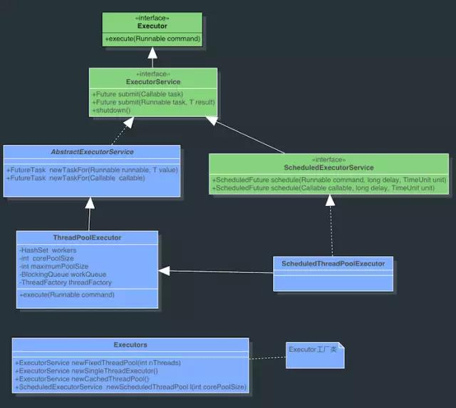
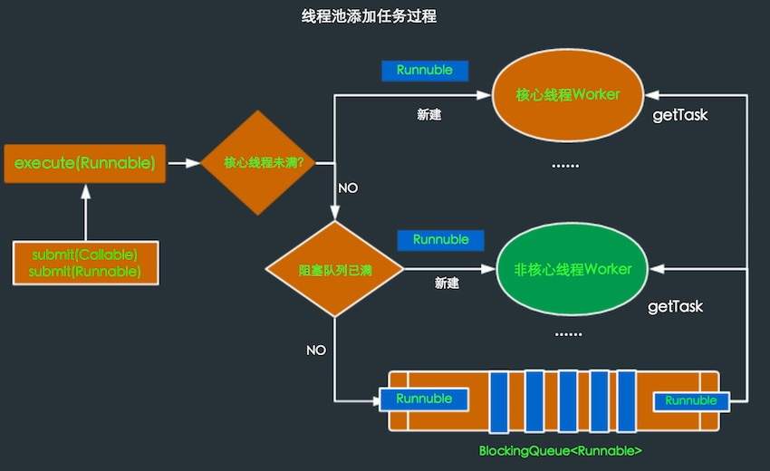
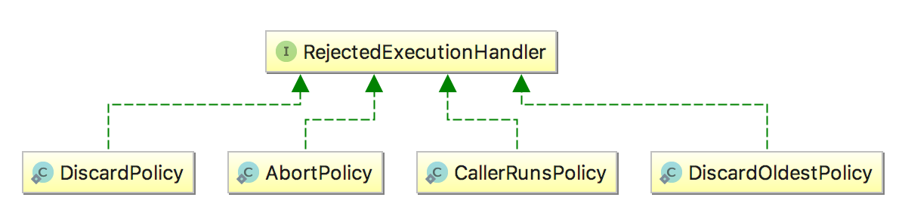

<!DOCTYPE html>
<html lang="zh-CN">
<head><meta name="generator" content="Hexo 3.8.0">

    <!--[if lt IE 9]>
        <style>body {display: none; background: none !important} </style>
        <meta http-equiv="Refresh" Content="0; url=//outdatedbrowser.com/" />
    <![endif]-->

<meta charset="utf-8">
<meta http-equiv="X-UA-Compatible" content="IE=edge, chrome=1">
<meta name="viewport" content="width=device-width, initial-scale=1, maximum-scale=1, user-scalable=no">
<meta name="format-detection" content="telephone=no">
<meta name="author" content="康兴华">


<meta name="description" content="线程池技术背景在面向对象编程中,创建和销毁对象都是很费时间的,因为创建一个对象要获取内存资源或者其他更多资源.在Java中更是如此,虚拟机将试图跟踪每一个对象,以便能够在对象销毁后进行垃圾回收.">
<meta name="keywords" content="笔记">
<meta property="og:type" content="article">
<meta property="og:title" content="从使用到原理学习Java线程池">
<meta property="og:url" content="http://kxh.ink/2018/05/04/ThreadPoolPrinciple/index.html">
<meta property="og:site_name" content="康兴华">
<meta property="og:description" content="线程池技术背景在面向对象编程中,创建和销毁对象都是很费时间的,因为创建一个对象要获取内存资源或者其他更多资源.在Java中更是如此,虚拟机将试图跟踪每一个对象,以便能够在对象销毁后进行垃圾回收.">
<meta property="og:locale" content="zh-CN">
<meta property="og:image" content="http://kxh.ink/2018/05/04/ThreadPoolPrinciple/20180319153538.jpg">
<meta property="og:image" content="http://kxh.ink/2018/05/04/ThreadPoolPrinciple/006tKfTcjw1f78hxvv1kmj30nm09c75z.jpg">
<meta property="og:image" content="http://kxh.ink/2018/05/04/ThreadPoolPrinciple/006tKfTcgw1f79ope94y3j30nm0egdif.jpg">
<meta property="og:image" content="http://kxh.ink/2018/05/04/ThreadPoolPrinciple/1521946099154-17b29e18-6853-4b39-8e2a-007ea89387bd.png">
<meta property="og:updated_time" content="2018-10-22T06:34:56.124Z">
<meta name="twitter:card" content="summary">
<meta name="twitter:title" content="从使用到原理学习Java线程池">
<meta name="twitter:description" content="线程池技术背景在面向对象编程中,创建和销毁对象都是很费时间的,因为创建一个对象要获取内存资源或者其他更多资源.在Java中更是如此,虚拟机将试图跟踪每一个对象,以便能够在对象销毁后进行垃圾回收.">
<meta name="twitter:image" content="http://kxh.ink/2018/05/04/ThreadPoolPrinciple/20180319153538.jpg">

<link rel="apple-touch-icon" href="/apple-touch-icon.png">


    <link rel="alternate" href="/atom.xml" title="康兴华" type="application/atom+xml">


    <link rel="shortcut icon" href="/favicon.png">


    <link href="//cdn.bootcss.com/animate.css/3.5.1/animate.min.css" rel="stylesheet">


    <link href="//cdn.bootcss.com/fancybox/2.1.5/jquery.fancybox.min.css" rel="stylesheet">


    <script src="//cdn.bootcss.com/pace/1.0.2/pace.min.js"></script>
    <link href="//cdn.bootcss.com/pace/1.0.2/themes/blue/pace-theme-minimal.css" rel="stylesheet">


<link rel="stylesheet" href="/css/style.css">


<link href="//cdn.bootcss.com/font-awesome/4.6.3/css/font-awesome.min.css" rel="stylesheet">


<title>从使用到原理学习Java线程池 | 康兴华</title>

<script src="//cdn.bootcss.com/jquery/2.2.4/jquery.min.js"></script>
<script src="//cdn.bootcss.com/clipboard.js/1.5.10/clipboard.min.js"></script>

<script>
    var yiliaConfig = {
        fancybox: true,
        animate: true,
        isHome: false,
        isPost: true,
        isArchive: false,
        isTag: false,
        isCategory: false,
        fancybox_js: "//cdn.bootcss.com/fancybox/2.1.5/jquery.fancybox.min.js",
        scrollreveal: "//cdn.bootcss.com/scrollReveal.js/3.1.4/scrollreveal.min.js",
        search: true
    }
</script>


    <script> yiliaConfig.jquery_ui = [false]; </script>


    <script> yiliaConfig.rootUrl = "\/";</script>


</head></html>
<body>
  <div id="container">
    <div class="left-col">
    <div class="overlay"></div>
<div class="intrude-less">
    <header id="header" class="inner">
        <a href="/" class="profilepic">
            
        </a>
        <hgroup>
          <h1 class="header-author"><a href="/">康兴华</a></h1>
        </hgroup>

        

        
            <form id="search-form">
            <input type="text" id="local-search-input" name="q" placeholder="search..." class="search form-control" autocomplete="off" autocorrect="off" searchonload="true">
            <i class="fa fa-times" onclick="resetSearch()"></i>
            </form>
            <div id="local-search-result"></div>
            <p class="no-result">No results found <i class="fa fa-spinner fa-pulse"></i></p>
        


        
            <div id="switch-btn" class="switch-btn">
                <div class="icon">
                    <div class="icon-ctn">
                        <div class="icon-wrap icon-house" data-idx="0">
                            <div class="birdhouse"></div>
                            <div class="birdhouse_holes"></div>
                        </div>
                        <div class="icon-wrap icon-ribbon hide" data-idx="1">
                            <div class="ribbon"></div>
                        </div>
                        
                        <div class="icon-wrap icon-link hide" data-idx="2">
                            <div class="loopback_l"></div>
                            <div class="loopback_r"></div>
                        </div>
                        
                        
                        <div class="icon-wrap icon-me hide" data-idx="3">
                            <div class="user"></div>
                            <div class="shoulder"></div>
                        </div>
                        
                    </div>
                    
                </div>
                <div class="tips-box hide">
                    <div class="tips-arrow"></div>
                    <ul class="tips-inner">
                        <li>菜单</li>
                        <li>标签</li>
                        
                        <li>友情链接</li>
                        
                        
                        <li>关于我</li>
                        
                    </ul>
                </div>
            </div>
        

        <div id="switch-area" class="switch-area">
            <div class="switch-wrap">
                <section class="switch-part switch-part1">
                    <nav class="header-menu">
                        <ul>
                        
                            <li><a href="/">主页</a></li>
                        
                            <li><a href="/archives/">所有文章</a></li>
                        
                            <li><a href="/tags/">标签云</a></li>
                        
                            <li><a href="/about/">关于我</a></li>
                        
                        </ul>
                    </nav>
                    <nav class="header-nav">
                        <ul class="social">
                            
                                <a class="fa Email" href="mailto:kangxinghua@gmail.com" title="Email"></a>
                            
                                <a class="fa GitHub" href="https://github.com/kangxinghua" title="GitHub"></a>
                            
                                <a class="fa RSS" href="/atom.xml" title="RSS"></a>
                            
                        </ul>
                    </nav>
                </section>
                
                
                <section class="switch-part switch-part2">
                    <div class="widget tagcloud" id="js-tagcloud">
                        <ul class="tag-list"><li class="tag-list-item"><a class="tag-list-link" href="/tags/Java-并发编程实战/">Java 并发编程实战</a></li><li class="tag-list-item"><a class="tag-list-link" href="/tags/笔记/">笔记</a></li></ul>
                    </div>
                </section>
                
                
                
                <section class="switch-part switch-part3">
                    <div id="js-friends">
                    
                      <a class="main-nav-link switch-friends-link" href="https://hexo.io">Hexo</a>
                    
                      <a class="main-nav-link switch-friends-link" href="https://pages.github.com/">GitHub</a>
                    
                      <a class="main-nav-link switch-friends-link" href="http://moxfive.xyz/">MOxFIVE</a>
                    
                    </div>
                </section>
                

                
                
                <section class="switch-part switch-part4">
                
                    <div id="js-aboutme">专注于前端</div>
                </section>
                
            </div>
        </div>
    </header>                
</div>
    </div>
    <div class="mid-col">
      <nav id="mobile-nav">
      <div class="overlay">
          <div class="slider-trigger"></div>
          <h1 class="header-author js-mobile-header hide"><a href="/" title="回到主页">康兴华</a></h1>
      </div>
    <div class="intrude-less">
        <header id="header" class="inner">
            <a href="/" class="profilepic">
                
            </a>
            <hgroup>
              <h1 class="header-author"><a href="/" title="回到主页">康兴华</a></h1>
            </hgroup>
            
            <nav class="header-menu">
                <ul>
                
                    <li><a href="/">主页</a></li>
                
                    <li><a href="/archives/">所有文章</a></li>
                
                    <li><a href="/tags/">标签云</a></li>
                
                    <li><a href="/about/">关于我</a></li>
                
                <div class="clearfix"></div>
                </ul>
            </nav>
            <nav class="header-nav">
                        <ul class="social">
                            
                                <a class="fa Email" target="_blank" href="mailto:kangxinghua@gmail.com" title="Email"></a>
                            
                                <a class="fa GitHub" target="_blank" href="https://github.com/kangxinghua" title="GitHub"></a>
                            
                                <a class="fa RSS" target="_blank" href="/atom.xml" title="RSS"></a>
                            
                        </ul>
            </nav>
        </header>                
    </div>
    <link class="menu-list" tags="标签" friends="友情链接" about="关于我">
</nav>
      <div class="body-wrap"><article id="post-ThreadPoolPrinciple" class="article article-type-post" itemscope="" itemprop="blogPost">
  
    <div class="article-meta">
      <a href="/2018/05/04/ThreadPoolPrinciple/" class="article-date">
      <time datetime="2018-05-04T06:38:55.000Z" itemprop="datePublished">2018-05-04</time>
</a>


    </div>
  
  <div class="article-inner">
    
      <input type="hidden" class="isFancy">
    
    
      <header class="article-header">
        
  
    <h1 class="article-title" itemprop="name">
      从使用到原理学习Java线程池
    </h1>
  

      </header>
      
      <div class="article-info article-info-post">
        

        
    <div class="article-tag tagcloud">
        <ul class="article-tag-list"><li class="article-tag-list-item"><a class="article-tag-list-link" href="/tags/笔记/">笔记</a></li></ul>
    </div>

        <div class="clearfix"></div>
      </div>
      
    
    <div class="article-entry" itemprop="articleBody">
      
          
        <h2 id="线程池技术背景"><a href="#线程池技术背景" class="headerlink" title="线程池技术背景"></a>线程池技术背景</h2><p>在面向对象编程中,创建和销毁对象都是很费时间的,因为创建一个对象要获取内存资源或者其他更多资源.在Java中更是如此,虚拟机将试图跟踪每一个对象,以便能够在对象销毁后进行垃圾回收.<br><a id="more"></a><br>所以提高服务程序效率的一个手段就是尽可能减少创建和销毁对象的次数,特别是一些很耗资源的对象创建和销毁.如何利用已有对象来服务就是一个需要解决的关键问题,其实这就是一些“池化资源”技术产生的原因.</p>
<p>例如Android中常见到的很多通用组件一般都离不开“池”的概念,如各种图片加载库,网络请求库,即使Android的消息传递机制的Message当使用Message.obtain()就是使用Message池中的对象,因为此这个概念很重要.本文将介绍的线程池技术同样符合这一思想.</p>
<h2 id="线程池的优点"><a href="#线程池的优点" class="headerlink" title="线程池的优点"></a>线程池的优点</h2><ol>
<li>重用线程池中的线程,减少因对象创建、销毁所带来的性能开销；</li>
<li>能有效的控制线程的最大并发数,提高系统资源利用率,同时避免过多的资源竞争,避免堵塞；</li>
<li>能够线程进行简单的管理,使线程的使用简单、高效；</li>
</ol>
<p>线程池框架Executor<br>Java中的线程池是通过Executor框架实现的,Executor框架包括类：Executor、Executors、ExecutorService、ThreadPoolExecutor、Callable和Future、FutureTask的使用等.</p>
<p>  </p>
<p><strong>Executor：</strong>所有线程池的接口,只有一个方法.<br><figure class="highlight java"><table><tr><td class="gutter"><pre><span class="line">1</span><br><span class="line">2</span><br><span class="line">3</span><br></pre></td><td class="code"><pre><span class="line"><span class="keyword">public</span> <span class="class"><span class="keyword">interface</span> <span class="title">Executor</span></span>&#123;</span><br><span class="line">    <span class="function"><span class="keyword">void</span> <span class="title">execute</span><span class="params">(Runnable command)</span></span>;</span><br><span class="line">&#125;</span><br></pre></td></tr></table></figure></p>
<p><strong>ExecutorService：</strong>增加Executor的行为,是Executor实现类最直接接口.<br><strong>Executors：</strong>提供了一系列工厂方法用于创建线程池,返回的线程池都实现了ExecutorService接口.<br><figure class="highlight java"><table><tr><td class="gutter"><pre><span class="line">1</span><br><span class="line">2</span><br><span class="line">3</span><br></pre></td><td class="code"><pre><span class="line"><span class="function"><span class="keyword">public</span> <span class="title">ThreadPoolExecutor</span><span class="params">(<span class="keyword">int</span> corePoolSize,<span class="keyword">int</span> maximumPoolSize,<span class="keyword">long</span> keepAliveTime,TimeUnit unit,BlockingQueue&lt;Runnable&gt; workQueue)</span> </span>&#123;</span><br><span class="line">    <span class="keyword">this</span>(corePoolSize,maximumPoolSize,keepAliveTime,workQueue,Executors.defaultThreadFactory(),defaultHandler);</span><br><span class="line">&#125;</span><br></pre></td></tr></table></figure></p>
<p><em>corePoolSize：</em>线程池的核心线程数,线程池中运行的线程数也永远不会超过corePoolSize个,默认情况下可以一直存活.可以通过设置allowCoreThreadTimeOut为true,此时核心线程数就是0,此时keepAliveTime控制所有线程的超时时间；<br><em>maximumPoolSize：</em>线程池运行的最大线程数；<br><em>keepAliveTime：</em>指的是空闲线程结束的超时时间；<br><em>unit：</em>是一个枚举,表示keepAliveTime的单位；<br><em>workQueue：</em>表示存放任务的BlockingQueue<runnable>队列.</runnable></p>
<blockquote>
<p>BlockingQueue：阻塞队列是java.util.concurrent下的主要控制线程同步的工具类,如果BlockingQueue是空的,从BlockingQueue取东西的操作将会被阻断进入等待状态,直到BlockingQueue进了东西才会被唤醒,同样,如果Blocking是满的,任何试图往里存东西的操作也会被阻断进入等待状态,直到BlockingQueue里有空间会被唤醒继续操作.<br>阻塞队列常用于生产者和消费者的场景,生产者就是往队列里添加元素的线程,消费者就是从队列里拿元素的线程.具体的实现类有LinkedBlockingQueue,ArrayBlockingQueued等.一般其内部的都是Lock和Condition来实现阻塞和唤醒.</p>
</blockquote>
<p>线程池的工作过程如下：<br>线程池刚创建时,里面没有一线程.任务队列是作为参数传进来的.不过,就算队列里面有任务,线程池也不会马上执行它们.<br>当调用execute()方法添加一个任务时,线程池会做如下判断：</p>
<blockquote>
<p>如果正在运行的线程数量小于corePoolSize,那么马上创建线程运行这个任务；<br>如果正在运行的线程数大于或等于corePoolSize,那么将这个任务放入队列；<br>如果这个时候队列满了,而且正在运行的线程数量小于maximumPoolSize,那么还是要创建非核心线程运行这个任务；<br>如果队列满了,而且正在运行的线程数量大于或等于maximumPoolSize,那么线程池抛出异常RejectExecutionException.<br>当一个线程完成任务时,它会从队列中取下一个任务和来执行.<br>当一个线程无事可做,超过一定的时间（keepAliveTime）时,线程池会判断,如果当前运行的线程数大于corePoolSize,那么这个线程就停掉.所以线程池的所有任务完成后,它最终会收缩到corePoolSize的大小.</p>
</blockquote>
<h2 id="线程的创建和使用"><a href="#线程的创建和使用" class="headerlink" title="线程的创建和使用"></a>线程的创建和使用</h2><p>生成线程池采用工具类Executors的静态方法,以下是几种常见的线程池.<br><em>SingleThreadExecutor：</em>单个后台线程（其缓冲队列是无界的）<br><figure class="highlight java"><table><tr><td class="gutter"><pre><span class="line">1</span><br><span class="line">2</span><br><span class="line">3</span><br><span class="line">4</span><br><span class="line">5</span><br><span class="line">6</span><br></pre></td><td class="code"><pre><span class="line"><span class="function"><span class="keyword">public</span> <span class="keyword">static</span> ExecutorService <span class="title">newSingleThreadExecutor</span><span class="params">()</span></span>&#123;</span><br><span class="line">    <span class="keyword">return</span> <span class="keyword">new</span> FinalizableDelegatedExecutorService</span><br><span class="line">            (<span class="keyword">new</span> ThreadPoolExecutor(<span class="number">1</span>, <span class="number">1</span>,</span><br><span class="line">                                    <span class="number">0L</span>, TimeUnit.MILLISECONDS,</span><br><span class="line">                                    <span class="keyword">new</span> LinkedBlockingQueue&lt;Runnable&gt;()));</span><br><span class="line">&#125;</span><br></pre></td></tr></table></figure></p>
<p>创建一个单线程的线程池.这个线程池只有一个核心线程工作,也就相当于单线程串行执行所有任务.如果这个唯一的线程因为异常结束,那么会有一个新的线程来替代它.此线程池保证所有的任务的执行顺序按照任务的提交顺序执行.<br><em>FixedThreadPool：</em>只有核心线程的线程池,大小固定（其缓冲队列是无界的）<br><figure class="highlight java"><table><tr><td class="gutter"><pre><span class="line">1</span><br><span class="line">2</span><br><span class="line">3</span><br><span class="line">4</span><br><span class="line">5</span><br></pre></td><td class="code"><pre><span class="line"><span class="function"><span class="keyword">public</span> <span class="keyword">static</span> ExecutorSerice <span class="title">newFixedThreadPool</span><span class="params">(<span class="keyword">int</span> nThreads)</span></span>&#123;</span><br><span class="line">    <span class="keyword">return</span> <span class="keyword">new</span> ThreadPoolExecutor(nThreads, nThreads,</span><br><span class="line">                                      <span class="number">0L</span>, TimeUnit.MILLISECONDS,</span><br><span class="line">                                      <span class="keyword">new</span> LinkedBlockingQueue&lt;Runnable&gt;());</span><br><span class="line">&#125;</span><br></pre></td></tr></table></figure></p>
<p>创建固定大小的线程池.每次提交一个任务就创建一个线程,直到线程达到线程池的最大大小.线程的大小一旦达到最大值就会保持不变,如果某个线程因为执行异常而结束,那么线程池会补充一个新的线程.<br><em>CachedThreadPool：</em>无界线程池,可以进行自动线程回收.<br><figure class="highlight java"><table><tr><td class="gutter"><pre><span class="line">1</span><br><span class="line">2</span><br><span class="line">3</span><br><span class="line">4</span><br><span class="line">5</span><br></pre></td><td class="code"><pre><span class="line"><span class="function"><span class="keyword">public</span> <span class="keyword">static</span> ExecutorService <span class="title">newCachedThreadPool</span><span class="params">()</span></span>&#123;</span><br><span class="line">    <span class="keyword">return</span> <span class="keyword">new</span> ThreadPoolExecutor(<span class="number">0</span>, Integer.MAX_VALUE,</span><br><span class="line">                                      <span class="number">60L</span>, TimeUnit.SECONDS,</span><br><span class="line">                                      <span class="keyword">new</span> SynchronousQueue&lt;Runnable&gt;());</span><br><span class="line">&#125;</span><br></pre></td></tr></table></figure></p>
<p>如果线程池的大小超过了处理任务所需的线程,那么就会回收部分空闲（60秒不执行任务）的线程,当任务数增加时,此线程池又可以智能的添加新线程来处理任务.此线程池不会对线程池大小做限制,线程池大小完成依赖于操作系统（或者说JVM）能够创建的最大线程大小.<br><em>ScheduledThreadPool：</em>核心线程池固定,大小无限的线程池.此线程池支持定时以周期性执行任务的需求.<br><figure class="highlight java"><table><tr><td class="gutter"><pre><span class="line">1</span><br><span class="line">2</span><br><span class="line">3</span><br></pre></td><td class="code"><pre><span class="line"><span class="function"><span class="keyword">public</span> <span class="keyword">static</span> ScheduledExecutorService <span class="title">newScheduledThreadPool</span><span class="params">(<span class="keyword">int</span> corePoolSize)</span> </span>&#123;</span><br><span class="line">        <span class="keyword">return</span> <span class="keyword">new</span> ScheduledThreadPoolExecutor(corePoolSize);</span><br><span class="line">    &#125;</span><br></pre></td></tr></table></figure></p>
<p>创建一个周期性执行任务的线程池.如果闲置,非核心线程池会在DEFAULT_KEEPALIVE_MILLIS时间内回收.<br>线程池最常用的提交任务方法有两种：<br><em>execute：</em><br><figure class="highlight java"><table><tr><td class="gutter"><pre><span class="line">1</span><br></pre></td><td class="code"><pre><span class="line">ExecutorService.execute(Runnable runnable);</span><br></pre></td></tr></table></figure></p>
<p><em>submit：</em><br><figure class="highlight java"><table><tr><td class="gutter"><pre><span class="line">1</span><br><span class="line">2</span><br><span class="line">3</span><br></pre></td><td class="code"><pre><span class="line">FutureTask task=ExecutorService.submit(Runnable runnable);</span><br><span class="line">FutureTask task=ExecutorService.submit(Runnable runnable,T Result);</span><br><span class="line">FutureTask task=ExecutorService.submit(Callable&lt;T&gt; callable);</span><br></pre></td></tr></table></figure></p>
<p>submit(Callable callable)的实现,submit(Runnable runnable)同理.<br><figure class="highlight java"><table><tr><td class="gutter"><pre><span class="line">1</span><br><span class="line">2</span><br><span class="line">3</span><br><span class="line">4</span><br><span class="line">5</span><br><span class="line">6</span><br></pre></td><td class="code"><pre><span class="line"><span class="keyword">public</span> &lt;T&gt; <span class="function">Future&lt;T&gt; <span class="title">submit</span><span class="params">(Callable&lt;T&gt; task)</span> </span>&#123;</span><br><span class="line">    <span class="keyword">if</span> (task == <span class="keyword">null</span>) <span class="keyword">throw</span> <span class="keyword">new</span> NullPointerException();</span><br><span class="line">    FutureTask&lt;T&gt; ftask = newTaskFor(task);</span><br><span class="line">    execute(ftask);</span><br><span class="line">    <span class="keyword">return</span> ftask;</span><br><span class="line">&#125;</span><br></pre></td></tr></table></figure></p>
<p>可以看出submit开启的是有返回结果的任务,会返回一个FutureTask对像,这样就能通过get()方法得到结果.submit最终调用的也是execute(Runnable runnable),submit只是将Callable对象或Runnable封装成一个FutureFask对象,因为FutureTask是个Runnable,所以可以在execute中执行.关于Callable对象和Runnable怎么封装成FutureTask对象,见<a href="http://www.silencedut.com/2016/06/15/Callable%E5%92%8CFuture%E3%80%81FutureTask%E7%9A%84%E4%BD%BF%E7%94%A8/" target="_blank" rel="noopener">Callable和Future、FutureTask的使用.</a></p>
<h2 id="线程池实现原理"><a href="#线程池实现原理" class="headerlink" title="线程池实现原理"></a>线程池实现原理</h2><p>如果只讲线程池的使用,那么招聘博客没有什么大的价值,充其量也就是熟悉Executor相关API的过程.程序池的实现过程没有用到synchronized关键字,用的都是volatile,Lock和同步(阻塞)队列,Atomic相关类,FutureTask等等,因为后者性能更优.理解的过程可以很好的学习源码中并发控制思想.</p>
<p>在开篇提到过线程池的优点是可以总结为一下三点：</p>
<ul>
<li>线程复用</li>
<li>控制最大并发数</li>
<li>管理线程</li>
</ul>
<ol>
<li><p><strong><em>线程复用过程</em></strong><br> 理解线程复用原理首先应了解线程的生命周期.<br> <br> 在线程的生命周期中,它要经过新建(New)、就绪(Runnable)、运行(Running)、阻塞(Bloched)和死亡(Dead)5种状态.</p>
<p> Thread通过new来新建一个线程,这个过程是初始化一些线程信息,如线程名,id,线程所属group等,可以认为只是个普通的对象.调用Thread的start()后Java虚拟机会为其创建调用栈和程序计数器,同时将hasBeenStarted为true,之后调用start方法就会有异常.</p>
<p> 处于这个状态中的线程并没有开始运行,只是表示线程可以运行了.至于该线程何时开始运行,取决于JVM里线程调度器的调度.当线程获取cpu后,run()方法会被调用.不要自己去调用Thread的run()方法.之后根据CPU的调度在(就绪–运行–阻塞)间切换,直到run()方法结束或其他方式停止线程,进入dead状态.</p>
<p> 所以实现线程复用的原理应该就是要保持线程处于存活状态(就绪、运行、阻塞).接下来看看下ThreadPoolExecutor是怎么实现线程复用的.</p>
<p> 在ThreadPoolExecutor主要Worker类来控制线程的复用.开下Worker类简化后的代码,这样方便理解：</p>
 <figure class="highlight java"><table><tr><td class="gutter"><pre><span class="line">1</span><br><span class="line">2</span><br><span class="line">3</span><br><span class="line">4</span><br><span class="line">5</span><br><span class="line">6</span><br><span class="line">7</span><br><span class="line">8</span><br><span class="line">9</span><br><span class="line">10</span><br><span class="line">11</span><br><span class="line">12</span><br><span class="line">13</span><br><span class="line">14</span><br><span class="line">15</span><br><span class="line">16</span><br><span class="line">17</span><br><span class="line">18</span><br><span class="line">19</span><br><span class="line">20</span><br><span class="line">21</span><br><span class="line">22</span><br><span class="line">23</span><br></pre></td><td class="code"><pre><span class="line"><span class="keyword">private</span> <span class="keyword">final</span> <span class="class"><span class="keyword">class</span> <span class="title">Worker</span> <span class="keyword">implements</span> <span class="title">Runnable</span> </span>&#123;</span><br><span class="line"></span><br><span class="line">	<span class="keyword">final</span> Thread thread;</span><br><span class="line"></span><br><span class="line">	Runnable firstTask;</span><br><span class="line"></span><br><span class="line">	Worker(Runnable firstTask) &#123;</span><br><span class="line">		<span class="keyword">this</span>.firstTask = firstTask;</span><br><span class="line">		<span class="keyword">this</span>.thread = getThreadFactory().newThread(<span class="keyword">this</span>);</span><br><span class="line">	&#125;</span><br><span class="line"></span><br><span class="line">	<span class="function"><span class="keyword">public</span> <span class="keyword">void</span> <span class="title">run</span><span class="params">()</span> </span>&#123;</span><br><span class="line">		runWorker(<span class="keyword">this</span>);</span><br><span class="line">	&#125;</span><br><span class="line"></span><br><span class="line">	<span class="function"><span class="keyword">final</span> <span class="keyword">void</span> <span class="title">runWorker</span><span class="params">(Worker w)</span> </span>&#123;</span><br><span class="line">		Runnable task = w.firstTask;</span><br><span class="line">		w.firstTask = <span class="keyword">null</span>;</span><br><span class="line">		<span class="keyword">while</span> (task != <span class="keyword">null</span> || (task = getTask()) != <span class="keyword">null</span>)&#123;</span><br><span class="line">		    task.run();</span><br><span class="line">        &#125;</span><br><span class="line">	&#125;</span><br><span class="line">&#125;</span><br></pre></td></tr></table></figure>
<p> Worker是一个Runnable,同时拥有一个thread,这个thread就是要开启的线程,在新建Worker对象时同时新建一个Thread对象,同时将Worker自己作为参数传入Thread,这样当Thread的start()方法调用时,运行的实际上是Worker的run()方法,接着到runWorker()中,有个while循环,一直从getTask()里得到Runnable对象,顺序执行.getTask()又是怎么得到Runnable对象得呢？依旧是简化后的代码：</p>
 <figure class="highlight java"><table><tr><td class="gutter"><pre><span class="line">1</span><br><span class="line">2</span><br><span class="line">3</span><br><span class="line">4</span><br><span class="line">5</span><br><span class="line">6</span><br><span class="line">7</span><br><span class="line">8</span><br><span class="line">9</span><br></pre></td><td class="code"><pre><span class="line"><span class="function"><span class="keyword">private</span> Runnable <span class="title">getTask</span><span class="params">()</span> </span>&#123;</span><br><span class="line">    <span class="keyword">if</span>(一些特殊情况) &#123;</span><br><span class="line">        <span class="keyword">return</span> <span class="keyword">null</span>;</span><br><span class="line">    &#125;</span><br><span class="line"></span><br><span class="line">    Runnable r = workQueue.take();</span><br><span class="line"></span><br><span class="line">    <span class="keyword">return</span> r;</span><br><span class="line">&#125;</span><br></pre></td></tr></table></figure>
<p> 这个workQueue就是初始化ThreadPoolExecutor时存放的任务的BlockingQueue队列,这个队列里的存放的都时将要执行的Runnable任务.因为BlockingQueue是个阻塞队列,BlockingQueue.task()得到如果是空,则进入等待状态直到BlockingQueue有新的对象被加入时唤醒阻塞的线程.所以一般情况Thread的run()方法就不会结束,而是不断的执行从workQueue里的Runnable任务,这就达到了线程复用的原理了.</p>
</li>
<li><p><strong><em>控制最大并发数</em></strong><br> 那Runnable是什么时候放入workQueue?Worker又是什么时候创建,Worker里的Thread的又是什么时候调用start()开启新线程来执行Worker的run()方法的呢？有上面的分析看出Worker里的runWorker()执行任务是一个接一个,串行进行的.那并发是怎么体现的呢？</p>
<p> 很容易想到是在execute(Runnable runnable)时会做上面的一些任务.看下execute里是怎么做的.</p>
<p> 简化后的代码 execute：</p>
 <figure class="highlight java"><table><tr><td class="gutter"><pre><span class="line">1</span><br><span class="line">2</span><br><span class="line">3</span><br><span class="line">4</span><br><span class="line">5</span><br><span class="line">6</span><br><span class="line">7</span><br><span class="line">8</span><br><span class="line">9</span><br><span class="line">10</span><br><span class="line">11</span><br><span class="line">12</span><br><span class="line">13</span><br><span class="line">14</span><br><span class="line">15</span><br><span class="line">16</span><br><span class="line">17</span><br><span class="line">18</span><br><span class="line">19</span><br><span class="line">20</span><br><span class="line">21</span><br><span class="line">22</span><br><span class="line">23</span><br><span class="line">24</span><br><span class="line">25</span><br><span class="line">26</span><br><span class="line">27</span><br><span class="line">28</span><br></pre></td><td class="code"><pre><span class="line"><span class="function"><span class="keyword">public</span> <span class="keyword">void</span> <span class="title">execute</span><span class="params">(Runnable command)</span> </span>&#123;</span><br><span class="line">    <span class="keyword">if</span> (command == <span class="keyword">null</span>)</span><br><span class="line">        <span class="keyword">throw</span> <span class="keyword">new</span> NullPointerException();</span><br><span class="line"></span><br><span class="line">     <span class="keyword">int</span> c = ctl.get();</span><br><span class="line">    <span class="comment">// 当前线程数 &lt; corePoolSize</span></span><br><span class="line">    <span class="keyword">if</span> (workerCountOf(c) &lt; corePoolSize) &#123;</span><br><span class="line">        <span class="comment">// 直接启动新的线程.</span></span><br><span class="line">        <span class="keyword">if</span> (addWorker(command, <span class="keyword">true</span>))</span><br><span class="line">            <span class="keyword">return</span>;</span><br><span class="line">        c = ctl.get();</span><br><span class="line">    &#125;</span><br><span class="line"></span><br><span class="line">    <span class="comment">// 活动线程数 &gt;= corePoolSize</span></span><br><span class="line">    <span class="comment">// runState为RUNNING &amp;&amp; 队列未满</span></span><br><span class="line">    <span class="comment">// workQueue.offer(command)表示添加到队列,如果添加成功返回true,否则返回   false</span></span><br><span class="line">    <span class="keyword">if</span> (isRunning(c) &amp;&amp; workQueue.offer(command)) &#123;</span><br><span class="line">        <span class="keyword">int</span> recheck = ctl.get();</span><br><span class="line">        <span class="comment">// 再次检验是否为RUNNING状态</span></span><br><span class="line">        <span class="comment">// 非RUNNING状态 则从workQueue中移除任务并拒绝</span></span><br><span class="line">        <span class="keyword">if</span> (!isRunning(recheck) &amp;&amp; remove(command))</span><br><span class="line">            reject(command);<span class="comment">// 采用线程池指定的策略拒绝任务</span></span><br><span class="line">        <span class="comment">// 两种情况：</span></span><br><span class="line">        <span class="comment">// 1.非RUNNING状态拒绝新的任务</span></span><br><span class="line">        <span class="comment">// 2.队列满了启动新的线程失败（workCount &gt; maximumPoolSize）</span></span><br><span class="line">    &#125; <span class="keyword">else</span> <span class="keyword">if</span> (!addWorker(command, <span class="keyword">false</span>))</span><br><span class="line">        reject(command);</span><br><span class="line">&#125;</span><br></pre></td></tr></table></figure>
<p> 简化后的代码 addWorker：</p>
 <figure class="highlight java"><table><tr><td class="gutter"><pre><span class="line">1</span><br><span class="line">2</span><br><span class="line">3</span><br><span class="line">4</span><br><span class="line">5</span><br><span class="line">6</span><br><span class="line">7</span><br><span class="line">8</span><br><span class="line">9</span><br><span class="line">10</span><br><span class="line">11</span><br></pre></td><td class="code"><pre><span class="line"><span class="function"><span class="keyword">private</span> <span class="keyword">boolean</span> <span class="title">addWorker</span><span class="params">(Runnable firstTask, <span class="keyword">boolean</span> core)</span> </span>&#123;</span><br><span class="line"></span><br><span class="line">    <span class="keyword">int</span> wc = workerCountOf(c);</span><br><span class="line">    <span class="keyword">if</span> (wc &gt;= (core ? corePoolSize : maximumPoolSize)) &#123;</span><br><span class="line">        <span class="keyword">return</span> <span class="keyword">false</span>;</span><br><span class="line">    &#125;</span><br><span class="line"></span><br><span class="line">    w = <span class="keyword">new</span> Worker(firstTask);</span><br><span class="line">    <span class="keyword">final</span> Thread t = w.thread;</span><br><span class="line">    t.start();</span><br><span class="line">&#125;</span><br></pre></td></tr></table></figure>
<p> 根据代码再看上面提到的线程池工作过程中的添加任务的情况：</p>
<pre><code>1. 如果正在运行的线程数小于corePoolSize,那么马上创建线程运行这个任务；
2. 如果正在运行的线程数大于或等于corePoolSize,那么将这个任务放入队列；
3. 如果这个时候队列满了,而且正在运行的线程数量小于maximumPoolSize,那么还是要创建非核心线程立刻运行这个任务；
4. 如果队列满了,而且正在运行的线程数量大于或者等于maximumPoolSize,那么线程池会抛出异常RejectExecutionException.
</code></pre><blockquote>
<p>这就是Android的AsyncTask在并行执行是在超出最大任务数是抛出RejectExecutionException的原因所在,详见基于最新版本的AsyncTask源码解读及AsyncTask的黑暗面</p>
</blockquote>
<p> 通过addWorde如果成功创建新的线程成功,则通过start()开启新的线程,同时将firstTask作为这个Woker里的run()中执行的第一个任务.</p>
<p> 虽然每个Worker的任务都是串行处理的,但是如果创建多个Worker,因为是公用一个workQueue,所以就会并行处理了.</p>
<p> 所以根据corePoolSize和maximumPoolSize来控制最大并发数.大致过程可用下图表示.<br> <br> 上面的讲解和图可以很好的理解的这个过程.</p>
<p> 如果是做Android开发的,并且对Handler原理比较熟悉,你可能会觉得这个图挺熟悉,其中的一些过程和Handler,Looper,Meaasge使用中,很相似.Handle.send(Message)相当于execute(Runnable),Looper中维护的Message队列相当于BlockingQueue,只不过需要自己通过同步来维护这个队列,Looper中的loop()函数循环从Message队列取Message和Worker中的runWork()不断从BlockingQueue取Runnable是同一的道理.</p>
</li>
<li><p><strong><em>管理线程</em></strong><br> 通过线程池可以很好的管理线程的复用,控制并发数,以及销毁等过程,线程的复用和控制并发上面已经讲了,而线程的管理过程已经穿插在其中了,也很好理解.</p>
<p> 在ThreadPoolExecutor有个ctl的AtomicInteger变量.通过这一个变量保存了两个内容：</p>
<pre><code>1. 所有线程的数量
2. 每个线程所处的状态
</code></pre><p> 其中低29位存线程数,高3位存runState,通过位运算来得到不同的值.</p>
 <figure class="highlight java"><table><tr><td class="gutter"><pre><span class="line">1</span><br><span class="line">2</span><br><span class="line">3</span><br><span class="line">4</span><br><span class="line">5</span><br><span class="line">6</span><br><span class="line">7</span><br><span class="line">8</span><br><span class="line">9</span><br><span class="line">10</span><br><span class="line">11</span><br><span class="line">12</span><br><span class="line">13</span><br><span class="line">14</span><br><span class="line">15</span><br><span class="line">16</span><br><span class="line">17</span><br></pre></td><td class="code"><pre><span class="line"><span class="keyword">private</span> <span class="keyword">final</span> AtomicInteger ctl = <span class="keyword">new</span> AtomicInteger(ctlOf(RUNNING, <span class="number">0</span>));</span><br><span class="line"></span><br><span class="line"><span class="comment">//得到线程的状态</span></span><br><span class="line"><span class="function"><span class="keyword">private</span> <span class="keyword">static</span> <span class="keyword">int</span> <span class="title">runStateOf</span><span class="params">(<span class="keyword">int</span> c)</span> </span>&#123;</span><br><span class="line">    <span class="keyword">return</span> c &amp; ~CAPACITY;</span><br><span class="line">&#125;</span><br><span class="line"></span><br><span class="line"><span class="comment">//得到Worker的的数量</span></span><br><span class="line"><span class="function"><span class="keyword">private</span> <span class="keyword">static</span> <span class="keyword">int</span> <span class="title">workerCountOf</span><span class="params">(<span class="keyword">int</span> c)</span> </span>&#123;</span><br><span class="line">    <span class="keyword">return</span> c &amp; CAPACITY;</span><br><span class="line">&#125;</span><br><span class="line"></span><br><span class="line"></span><br><span class="line"><span class="comment">// 判断线程是否在运行</span></span><br><span class="line"><span class="function"><span class="keyword">private</span> <span class="keyword">static</span> <span class="keyword">boolean</span> <span class="title">isRunning</span><span class="params">(<span class="keyword">int</span> c)</span> </span>&#123;</span><br><span class="line">    <span class="keyword">return</span> c &lt; SHUTDOWN;</span><br><span class="line">&#125;</span><br></pre></td></tr></table></figure>
<p> 这里主要通过shutdown和shutdownNow()来分析线程池的关闭过程.首先线程池有五种状态来控制任务添加与执行.主要介绍以下三种：</p>
<pre><code>1. RUNNING状态：线程池正常运行,可以接受新的任务并处理队列中的任务；
2. SHUTDOWN状态：不在接受新的任务,但是会执行队列中的任务；
3. STOP状态；不在接受新任务,不处理队列中的任务；
</code></pre><p> shutdown这个方法会将runState置为SHUNDOWN,会终止所有的空闲线程,而仍在工作的线程不受影响.所以队列中的任务人会被执行.shutdownNow方法runState置为STOP.和shutdown方法的区别,这个方法会终止所有的线程,所以队列中的任务也不会被执行了.</p>
</li>
</ol>
<h2 id="如何正确使用线程池"><a href="#如何正确使用线程池" class="headerlink" title="如何正确使用线程池"></a>如何正确使用线程池</h2><h3 id="避免使用无界队列"><a href="#避免使用无界队列" class="headerlink" title="避免使用无界队列"></a>避免使用无界队列</h3><p>不要使用Executors.newXXXThreadPool()快捷方法创建线程池,因为这种方式会使用无界的任务队列,为避免OOM,我们应该使用ThreadPoolExecutor的构造方法手动指定队列的最大长度：<br><figure class="highlight java"><table><tr><td class="gutter"><pre><span class="line">1</span><br><span class="line">2</span><br><span class="line">3</span><br><span class="line">4</span><br></pre></td><td class="code"><pre><span class="line">ExecutorService executorService = <span class="keyword">new</span> ThreadPoolExecutor(<span class="number">2</span>, <span class="number">2</span>, </span><br><span class="line">                <span class="number">0</span>, TimeUnit.SECONDS, </span><br><span class="line">                <span class="keyword">new</span> ArrayBlockingQueue&lt;&gt;(<span class="number">512</span>), <span class="comment">// 使用有界队列,避免OOM</span></span><br><span class="line">                <span class="keyword">new</span> ThreadPoolExecutor.DiscardPolicy());</span><br></pre></td></tr></table></figure></p>
<h3 id="明确拒绝任务时的行为"><a href="#明确拒绝任务时的行为" class="headerlink" title="明确拒绝任务时的行为"></a>明确拒绝任务时的行为</h3><p>任务队列总有占满的时候,这是再submit()提交新的任务会怎么样呢？RejectedExecutionHandler接口为我们提供了控制方式,接口定义如下:<br><figure class="highlight java"><table><tr><td class="gutter"><pre><span class="line">1</span><br><span class="line">2</span><br><span class="line">3</span><br></pre></td><td class="code"><pre><span class="line"><span class="keyword">public</span> <span class="class"><span class="keyword">interface</span> <span class="title">RejectedExecutionHandler</span> </span>&#123;</span><br><span class="line">    <span class="function"><span class="keyword">void</span> <span class="title">rejectedExecution</span><span class="params">(Runnable r, ThreadPoolExecutor executor)</span></span>;</span><br><span class="line">&#125;</span><br></pre></td></tr></table></figure></p>
<p></p>
<table>
<thead>
<tr>
<th>拒绝策略</th>
<th>拒绝行为</th>
</tr>
</thead>
<tbody>
<tr>
<td>AbortPolicy</td>
<td>抛出RejectedExecutionException</td>
</tr>
<tr>
<td>DiscardPolicy</td>
<td>什么也不做,直接忽略</td>
</tr>
<tr>
<td>DiscardOldestPolicy</td>
<td>丢弃执行队列中最老的任务,尝试为当前提交的任务腾出位置</td>
</tr>
<tr>
<td>CallerRunsPolicy</td>
<td>直接由提交任务者执行这个任务</td>
</tr>
</tbody>
</table>
<p>线程池默认的拒绝行为是AbortPolicy,也就是抛出RejectedExecutionHandler异常,该异常是非受检异常,很容易忘记捕获.如果不关心任务被拒绝的事件,可以将拒绝策略设置成DiscardPolicy,这样多余的任务会悄悄的被忽略.</p>
<figure class="highlight java"><table><tr><td class="gutter"><pre><span class="line">1</span><br><span class="line">2</span><br><span class="line">3</span><br><span class="line">4</span><br></pre></td><td class="code"><pre><span class="line">ExecutorService executorService = <span class="keyword">new</span> ThreadPoolExecutor(<span class="number">2</span>, <span class="number">2</span>, </span><br><span class="line">                <span class="number">0</span>, TimeUnit.SECONDS, </span><br><span class="line">                <span class="keyword">new</span> ArrayBlockingQueue&lt;&gt;(<span class="number">512</span>), </span><br><span class="line">                <span class="keyword">new</span> ThreadPoolExecutor.DiscardPolicy());<span class="comment">// 指定拒绝策略</span></span><br></pre></td></tr></table></figure>
<h3 id="获取处理结果和异常"><a href="#获取处理结果和异常" class="headerlink" title="获取处理结果和异常"></a>获取处理结果和异常</h3><p>线程池的处理结果、以及处理过程中的异常都被包装到Future中,并在调用Future.get()方法时获取,执行过程中的异常会被包装成ExecutionException,submit()方法本身不会传递结果和任务执行过程中的异常.获取执行结果的代码可以这样写：</p>
<figure class="highlight java"><table><tr><td class="gutter"><pre><span class="line">1</span><br><span class="line">2</span><br><span class="line">3</span><br><span class="line">4</span><br><span class="line">5</span><br><span class="line">6</span><br><span class="line">7</span><br><span class="line">8</span><br><span class="line">9</span><br><span class="line">10</span><br><span class="line">11</span><br><span class="line">12</span><br><span class="line">13</span><br><span class="line">14</span><br><span class="line">15</span><br><span class="line">16</span><br></pre></td><td class="code"><pre><span class="line">ExecutorService executorService = Executors.newFixedThreadPool(<span class="number">4</span>);</span><br><span class="line">Future&lt;Object&gt; future = executorService.submit(<span class="keyword">new</span> Callable&lt;Object&gt;() &#123;</span><br><span class="line">        <span class="meta">@Override</span></span><br><span class="line">        <span class="function"><span class="keyword">public</span> Object <span class="title">call</span><span class="params">()</span> <span class="keyword">throws</span> Exception </span>&#123;</span><br><span class="line">            <span class="keyword">throw</span> <span class="keyword">new</span> RuntimeException(<span class="string">"exception in call~"</span>);<span class="comment">// 该异常会在调用Future.get()时传递给调用者</span></span><br><span class="line">        &#125;</span><br><span class="line">    &#125;);</span><br><span class="line">     </span><br><span class="line"><span class="keyword">try</span> &#123;</span><br><span class="line">  Object result = future.get();</span><br><span class="line">&#125; <span class="keyword">catch</span> (InterruptedException e) &#123;</span><br><span class="line">  <span class="comment">// interrupt</span></span><br><span class="line">&#125; <span class="keyword">catch</span> (ExecutionException e) &#123;</span><br><span class="line">  <span class="comment">// exception in Callable.call()</span></span><br><span class="line">  e.printStackTrace();</span><br><span class="line">&#125;</span><br></pre></td></tr></table></figure>
<h2 id="线程池的常用场景"><a href="#线程池的常用场景" class="headerlink" title="线程池的常用场景"></a>线程池的常用场景</h2><h3 id="正确构造线程池"><a href="#正确构造线程池" class="headerlink" title="正确构造线程池"></a>正确构造线程池</h3><figure class="highlight java"><table><tr><td class="gutter"><pre><span class="line">1</span><br><span class="line">2</span><br><span class="line">3</span><br><span class="line">4</span><br><span class="line">5</span><br><span class="line">6</span><br><span class="line">7</span><br></pre></td><td class="code"><pre><span class="line"><span class="keyword">int</span> poolSize = Runtime.getRuntime().availableProcessors() * <span class="number">2</span>;</span><br><span class="line">BlockingQueue&lt;Runnable&gt; queue = <span class="keyword">new</span> ArrayBlockingQueue&lt;&gt;(<span class="number">512</span>);</span><br><span class="line">RejectedExecutionHandler policy = <span class="keyword">new</span> ThreadPoolExecutor.DiscardPolicy();</span><br><span class="line">executorService = <span class="keyword">new</span> ThreadPoolExecutor(poolSize, poolSize,</span><br><span class="line">    <span class="number">0</span>, TimeUnit.SECONDS,</span><br><span class="line">            queue,</span><br><span class="line">            policy);</span><br></pre></td></tr></table></figure>
<h3 id="获取单个结果"><a href="#获取单个结果" class="headerlink" title="获取单个结果"></a>获取单个结果</h3><p>过submit()向线程池提交任务后会返回一个Future,调用V Future.get()方法能够阻塞等待执行结果,V get(long timeout, TimeUnit unit)方法可以指定等待的超时时间.</p>
<h3 id="获取多个结果"><a href="#获取多个结果" class="headerlink" title="获取多个结果"></a>获取多个结果</h3><p>如果向线程池提交了多个任务,要获取这些任务的执行结果,可以依次调用Future.get()获得.但对于这种场景,我们更应该使用ExecutorCompletionService,该类的take()方法总是阻塞等待某一个任务完成,然后返回该任务的Future对象.向CompletionService批量提交任务后,只需调用相同次数的CompletionService.take()方法,就能获取所有任务的执行结果,获取顺序是任意的,取决于任务的完成顺序：</p>
<figure class="highlight java"><table><tr><td class="gutter"><pre><span class="line">1</span><br><span class="line">2</span><br><span class="line">3</span><br><span class="line">4</span><br><span class="line">5</span><br><span class="line">6</span><br><span class="line">7</span><br><span class="line">8</span><br><span class="line">9</span><br><span class="line">10</span><br><span class="line">11</span><br><span class="line">12</span><br><span class="line">13</span><br><span class="line">14</span><br><span class="line">15</span><br></pre></td><td class="code"><pre><span class="line"><span class="function"><span class="keyword">void</span> <span class="title">solve</span><span class="params">(Executor executor, Collection&lt;Callable&lt;Result&gt;&gt; solvers)</span></span></span><br><span class="line"><span class="function">   <span class="keyword">throws</span> InterruptedException, ExecutionException </span>&#123;</span><br><span class="line">    </span><br><span class="line">   CompletionService&lt;Result&gt; ecs = <span class="keyword">new</span> ExecutorCompletionService&lt;Result&gt;(executor);<span class="comment">// 构造器</span></span><br><span class="line">    </span><br><span class="line">   <span class="keyword">for</span> (Callable&lt;Result&gt; s : solvers)<span class="comment">// 提交所有任务</span></span><br><span class="line">       ecs.submit(s);</span><br><span class="line">        </span><br><span class="line">   <span class="keyword">int</span> n = solvers.size();</span><br><span class="line">   <span class="keyword">for</span> (<span class="keyword">int</span> i = <span class="number">0</span>; i &lt; n; ++i) &#123;<span class="comment">// 获取每一个完成的任务</span></span><br><span class="line">       Result r = ecs.take().get();</span><br><span class="line">       <span class="keyword">if</span> (r != <span class="keyword">null</span>)</span><br><span class="line">           use(r);</span><br><span class="line">   &#125;</span><br><span class="line">&#125;</span><br></pre></td></tr></table></figure>
<h3 id="单个任务的超时时间"><a href="#单个任务的超时时间" class="headerlink" title="单个任务的超时时间"></a>单个任务的超时时间</h3><p>V Future.get(long timeout, TimeUnit unit)方法可以指定等待的超时时间,超时未完成会抛出TimeoutException.</p>
<p>多个任务的超时时间<br>等待多个任务完成,并设置最大等待时间,可以通过CountDownLatch完成：<br><figure class="highlight java"><table><tr><td class="gutter"><pre><span class="line">1</span><br><span class="line">2</span><br><span class="line">3</span><br><span class="line">4</span><br><span class="line">5</span><br><span class="line">6</span><br><span class="line">7</span><br><span class="line">8</span><br><span class="line">9</span><br><span class="line">10</span><br><span class="line">11</span><br><span class="line">12</span><br><span class="line">13</span><br><span class="line">14</span><br><span class="line">15</span><br><span class="line">16</span><br><span class="line">17</span><br><span class="line">18</span><br></pre></td><td class="code"><pre><span class="line"><span class="function"><span class="keyword">public</span> <span class="keyword">void</span> <span class="title">testLatch</span><span class="params">(ExecutorService executorService, List&lt;Runnable&gt; tasks)</span> </span></span><br><span class="line"><span class="function">    <span class="keyword">throws</span> InterruptedException</span>&#123;</span><br><span class="line">       </span><br><span class="line">    CountDownLatch latch = <span class="keyword">new</span> CountDownLatch(tasks.size());</span><br><span class="line">      <span class="keyword">for</span>(Runnable r : tasks)&#123;</span><br><span class="line">          executorService.submit(<span class="keyword">new</span> Runnable() &#123;</span><br><span class="line">              <span class="meta">@Override</span></span><br><span class="line">              <span class="function"><span class="keyword">public</span> <span class="keyword">void</span> <span class="title">run</span><span class="params">()</span> </span>&#123;</span><br><span class="line">                  <span class="keyword">try</span>&#123;</span><br><span class="line">                      r.run();</span><br><span class="line">                  &#125;<span class="keyword">finally</span> &#123;</span><br><span class="line">                      latch.countDown();<span class="comment">// countDown</span></span><br><span class="line">                  &#125;</span><br><span class="line">              &#125;</span><br><span class="line">          &#125;);</span><br><span class="line">      &#125;</span><br><span class="line">      latch.await(<span class="number">10</span>, TimeUnit.SECONDS); <span class="comment">// 指定超时时间</span></span><br><span class="line">  &#125;</span><br></pre></td></tr></table></figure></p>
<h2 id="线程池和装修公司"><a href="#线程池和装修公司" class="headerlink" title="线程池和装修公司"></a>线程池和装修公司</h2><p>以运营一家装修公司做个比喻.公司在办公地点等待客户来提交装修请求；公司有固定数量的正式工以维持运转；旺季业务较多时,新来的客户请求会被排期,比如接单后告诉用户一个月后才能开始装修；当排期太多时,为避免用户等太久,公司会通过某些渠道（比如人才市场、熟人介绍等）雇佣一些临时工（注意,招聘临时工是在排期排满之后）；如果临时工也忙不过来,公司将决定不再接收新的客户,直接拒单.</p>
<p>线程池就是程序中的“装修公司”,代劳各种脏活累活.上面的过程对应到线程池上：<br><figure class="highlight java"><table><tr><td class="gutter"><pre><span class="line">1</span><br><span class="line">2</span><br><span class="line">3</span><br><span class="line">4</span><br><span class="line">5</span><br><span class="line">6</span><br><span class="line">7</span><br><span class="line">8</span><br><span class="line">9</span><br></pre></td><td class="code"><pre><span class="line"><span class="comment">// Java线程池的完整构造函数</span></span><br><span class="line"><span class="function"><span class="keyword">public</span> <span class="title">ThreadPoolExecutor</span><span class="params">(</span></span></span><br><span class="line"><span class="function"><span class="params">  <span class="keyword">int</span> corePoolSize, // 正式工数量</span></span></span><br><span class="line"><span class="function"><span class="params">  <span class="keyword">int</span> maximumPoolSize, // 工人数量上限,包括正式工和临时工</span></span></span><br><span class="line"><span class="function"><span class="params">  <span class="keyword">long</span> keepAliveTime, TimeUnit unit, // 临时工游手好闲的最长时间,超过这个时间将被解雇</span></span></span><br><span class="line"><span class="function"><span class="params">  BlockingQueue&lt;Runnable&gt; workQueue, // 排期队列</span></span></span><br><span class="line"><span class="function"><span class="params">  ThreadFactory threadFactory, // 招人渠道</span></span></span><br><span class="line"><span class="function"><span class="params">  RejectedExecutionHandler handler // 拒单方式</span></span></span><br><span class="line"><span class="function"><span class="params">  )</span></span></span><br></pre></td></tr></table></figure></p>
<h2 id="如何合理地估算线程池大小"><a href="#如何合理地估算线程池大小" class="headerlink" title="如何合理地估算线程池大小?"></a>如何合理地估算线程池大小?</h2><p>这个问题虽然看起来很小,却并不那么容易回答.大家如果有更好的方法欢迎赐教,先来一个天真的估算方法：假设要求一个系统的TPS（Transaction Per Second或者Task Per Second,tps是每秒内的事务数,比如执行了dml操作,那么相应的tps会增加）至少为20,然后假设每个Transaction由一个线程完成,继续假设平均每个线程处理一个Transaction的时间为4s.那么问题转化为：</p>
<h3 id="如何设计线程池大小-使得可以在1s内处理完20个Transaction"><a href="#如何设计线程池大小-使得可以在1s内处理完20个Transaction" class="headerlink" title="如何设计线程池大小,使得可以在1s内处理完20个Transaction?"></a>如何设计线程池大小,使得可以在1s内处理完20个Transaction?</h3><p>计算过程很简单,每个线程的处理能力为0.25TPS(1s/4s),那么要达到20TPS,显然需要20/0.25=80个线程.</p>
<p>很显然这个估算方法很天真,因为它没有考虑到CPU数目.一般服务器的CPU核数为16或者32,如果有80个线程,那么肯定会带来太多不必要的线程上下文切换开销.</p>
<p>再来第二种简单的但不知是否可行的方法(N为CPU总核数):</p>
<ol>
<li>如果是CPU密集型应用,则线程池大小设置为N+1</li>
<li>如果是IO密集型应用,则线程池大小设置为2N+1</li>
</ol>
<p><strong>如果一台服务器上只部署这一个应用并且只有这一个线程池,那么这种估算或许合理,具体还需自行测试验证.</strong></p>
<p>接下来在这个文档：服务器性能IO优化 中发现一个估算公式：</p>
<blockquote>
<p>最佳线程数目 = （（线程等待时间+线程CPU时间）/线程CPU时间 ）* CPU数目</p>
</blockquote>
<p>比如平均每个线程CPU运行时间为0.5s,而线程等待时间（非CPU运行时间,比如IO）为1.5s,CPU核心数为8,那么根据上面这个公式估算得到：((0.5+1.5)/0.5)*8=32.这个公式进一步转化为：</p>
<blockquote>
<p>最佳线程数目 = （线程等待时间与线程CPU时间之比 + 1）* CPU数目</p>
</blockquote>
<p>可以得出一个结论：<br><strong>线程等待时间所占比例越高(IO密集型),需要越多线程.线程CPU时间所占比例越高(CPU密集型),需要越少线程.</strong></p>
<p>上一种估算方法也和这个结论相合.<br>一个系统最快的部分是CPU,所以决定一个系统吞吐量上限的是CPU。增强CPU处理能力,可以提高系统吞吐量上限。但根据短板效应,真实的系统吞吐量并不能单纯根据CPU来计算。那要提高系统吞吐量,就需要从“系统短板”（比如网络延迟、IO）着手：</p>
<ol>
<li>尽量提高短板操作的并行化比率,比如多线程下载技术</li>
<li>增强短板能力,比如用NIO替代IO</li>
</ol>
<p>第一条可以联系到Amdahl定律,这条定律定义了串行系统并行化后的加速比计算公式：</p>
<blockquote>
<p>加速比=优化前系统耗时 / 优化后系统耗时</p>
</blockquote>
<p>加速比越大,表明系统并行化的优化效果越好。Addahl定律还给出了系统并行度、CPU数目和加速比的关系,加速比为Speedup,系统串行化比率（指串行执行代码所占比率）为F,CPU数目为N</p>
<blockquote>
<p>Speedup &lt;= 1 / (F + (1-F)/N)</p>
</blockquote>
<p>当N足够大时,串行化比率F越小,加速比Speedup越大.</p>
<p><strong>是否使用线程池就一定比使用单线程高效呢?</strong></p>
<p>答案是否定的,比如Redis就是单线程的,但它却非常高效,基本操作都能达到十万量级/s。从线程这个角度来看,部分原因在于:<br>多线程带来线程上下文切换开销,单线程就没有这种开销锁</p>
<p>当然“Redis很快”更本质的原因在于：Redis基本都是内存操作,这种情况下单线程可以很高效地利用CPU。而多线程适用场景一般是：存在相当比例的IO和网络操作.</p>
<p>所以即使有上面的简单估算方法,也许看似合理,但实际上也未必合理,都需要结合系统真实情况（比如是IO密集型或者是CPU密集型或者是纯内存操作）和硬件环境（CPU、内存、硬盘读写速度、网络状况等）来不断尝试达到一个符合实际的合理估算值.</p>
<p>最后来一个“Dark Magic”估算方法(因为我暂时还没有搞懂它的原理),使用下面的类：</p>
<figure class="highlight java"><table><tr><td class="gutter"><pre><span class="line">1</span><br><span class="line">2</span><br><span class="line">3</span><br><span class="line">4</span><br><span class="line">5</span><br><span class="line">6</span><br><span class="line">7</span><br><span class="line">8</span><br><span class="line">9</span><br><span class="line">10</span><br><span class="line">11</span><br><span class="line">12</span><br><span class="line">13</span><br><span class="line">14</span><br><span class="line">15</span><br><span class="line">16</span><br><span class="line">17</span><br><span class="line">18</span><br><span class="line">19</span><br><span class="line">20</span><br><span class="line">21</span><br><span class="line">22</span><br><span class="line">23</span><br><span class="line">24</span><br><span class="line">25</span><br><span class="line">26</span><br><span class="line">27</span><br><span class="line">28</span><br><span class="line">29</span><br><span class="line">30</span><br><span class="line">31</span><br><span class="line">32</span><br><span class="line">33</span><br><span class="line">34</span><br><span class="line">35</span><br><span class="line">36</span><br><span class="line">37</span><br><span class="line">38</span><br><span class="line">39</span><br><span class="line">40</span><br><span class="line">41</span><br><span class="line">42</span><br><span class="line">43</span><br><span class="line">44</span><br><span class="line">45</span><br><span class="line">46</span><br><span class="line">47</span><br><span class="line">48</span><br><span class="line">49</span><br><span class="line">50</span><br><span class="line">51</span><br><span class="line">52</span><br><span class="line">53</span><br><span class="line">54</span><br><span class="line">55</span><br><span class="line">56</span><br><span class="line">57</span><br><span class="line">58</span><br><span class="line">59</span><br><span class="line">60</span><br><span class="line">61</span><br><span class="line">62</span><br><span class="line">63</span><br><span class="line">64</span><br><span class="line">65</span><br><span class="line">66</span><br><span class="line">67</span><br><span class="line">68</span><br><span class="line">69</span><br><span class="line">70</span><br><span class="line">71</span><br><span class="line">72</span><br><span class="line">73</span><br><span class="line">74</span><br><span class="line">75</span><br><span class="line">76</span><br><span class="line">77</span><br><span class="line">78</span><br><span class="line">79</span><br><span class="line">80</span><br><span class="line">81</span><br><span class="line">82</span><br><span class="line">83</span><br><span class="line">84</span><br><span class="line">85</span><br><span class="line">86</span><br><span class="line">87</span><br><span class="line">88</span><br><span class="line">89</span><br><span class="line">90</span><br><span class="line">91</span><br><span class="line">92</span><br><span class="line">93</span><br><span class="line">94</span><br><span class="line">95</span><br><span class="line">96</span><br><span class="line">97</span><br><span class="line">98</span><br><span class="line">99</span><br><span class="line">100</span><br><span class="line">101</span><br><span class="line">102</span><br><span class="line">103</span><br><span class="line">104</span><br><span class="line">105</span><br><span class="line">106</span><br><span class="line">107</span><br><span class="line">108</span><br><span class="line">109</span><br><span class="line">110</span><br><span class="line">111</span><br><span class="line">112</span><br><span class="line">113</span><br><span class="line">114</span><br><span class="line">115</span><br><span class="line">116</span><br><span class="line">117</span><br><span class="line">118</span><br><span class="line">119</span><br><span class="line">120</span><br><span class="line">121</span><br><span class="line">122</span><br><span class="line">123</span><br><span class="line">124</span><br><span class="line">125</span><br><span class="line">126</span><br><span class="line">127</span><br><span class="line">128</span><br><span class="line">129</span><br><span class="line">130</span><br><span class="line">131</span><br><span class="line">132</span><br><span class="line">133</span><br><span class="line">134</span><br><span class="line">135</span><br><span class="line">136</span><br><span class="line">137</span><br><span class="line">138</span><br><span class="line">139</span><br><span class="line">140</span><br><span class="line">141</span><br><span class="line">142</span><br><span class="line">143</span><br><span class="line">144</span><br><span class="line">145</span><br><span class="line">146</span><br><span class="line">147</span><br><span class="line">148</span><br><span class="line">149</span><br><span class="line">150</span><br><span class="line">151</span><br><span class="line">152</span><br><span class="line">153</span><br><span class="line">154</span><br><span class="line">155</span><br><span class="line">156</span><br><span class="line">157</span><br><span class="line">158</span><br><span class="line">159</span><br><span class="line">160</span><br><span class="line">161</span><br><span class="line">162</span><br><span class="line">163</span><br><span class="line">164</span><br><span class="line">165</span><br><span class="line">166</span><br><span class="line">167</span><br><span class="line">168</span><br><span class="line">169</span><br><span class="line">170</span><br><span class="line">171</span><br></pre></td><td class="code"><pre><span class="line"><span class="keyword">import</span> java.math.BigDecimal;</span><br><span class="line"><span class="keyword">import</span> java.math.RoundingMode;</span><br><span class="line"><span class="keyword">import</span> java.util.Timer;</span><br><span class="line"><span class="keyword">import</span> java.util.TimerTask;</span><br><span class="line"><span class="keyword">import</span> java.util.concurrent.BlockingQueue;</span><br><span class="line"></span><br><span class="line"><span class="keyword">public</span> <span class="keyword">abstract</span> <span class="class"><span class="keyword">class</span> <span class="title">PoolSizeCalculator</span> </span>&#123;</span><br><span class="line"></span><br><span class="line">    <span class="comment">/**</span></span><br><span class="line"><span class="comment">     * The sample queue size to calculate the size of a single &#123;<span class="doctag">@link</span> Runnable&#125; element.</span></span><br><span class="line"><span class="comment">     */</span></span><br><span class="line">    <span class="keyword">private</span> <span class="keyword">final</span> <span class="keyword">int</span> SAMPLE_QUEUE_SIZE = <span class="number">1000</span>;</span><br><span class="line"></span><br><span class="line">    <span class="comment">/**</span></span><br><span class="line"><span class="comment">     * Accuracy of test run. It must finish within 20ms of the testTime otherwise we retry the test. This could be</span></span><br><span class="line"><span class="comment">     * configurable.</span></span><br><span class="line"><span class="comment">     */</span></span><br><span class="line">    <span class="keyword">private</span> <span class="keyword">final</span> <span class="keyword">int</span> EPSYLON = <span class="number">20</span>;</span><br><span class="line"></span><br><span class="line">    <span class="comment">/**</span></span><br><span class="line"><span class="comment">     * Control variable for the CPU time investigation.</span></span><br><span class="line"><span class="comment">     */</span></span><br><span class="line">    <span class="keyword">private</span> <span class="keyword">volatile</span> <span class="keyword">boolean</span> expired;</span><br><span class="line"></span><br><span class="line">    <span class="comment">/**</span></span><br><span class="line"><span class="comment">     * Time (millis) of the test run in the CPU time calculation.</span></span><br><span class="line"><span class="comment">     */</span></span><br><span class="line">    <span class="keyword">private</span> <span class="keyword">final</span> <span class="keyword">long</span> testtime = <span class="number">3000</span>;</span><br><span class="line"></span><br><span class="line">    <span class="comment">/**</span></span><br><span class="line"><span class="comment">     * Calculates the boundaries of a thread pool for a given &#123;<span class="doctag">@link</span> Runnable&#125;.</span></span><br><span class="line"><span class="comment">     *</span></span><br><span class="line"><span class="comment">     * <span class="doctag">@param</span> targetUtilization    the desired utilization of the CPUs (0 &lt;= targetUtilization &lt;= 1)</span></span><br><span class="line"><span class="comment">     * <span class="doctag">@param</span> targetQueueSizeBytes the desired maximum work queue size of the thread pool (bytes)</span></span><br><span class="line"><span class="comment">     */</span></span><br><span class="line">    <span class="function"><span class="keyword">protected</span> <span class="keyword">void</span> <span class="title">calculateBoundaries</span><span class="params">(BigDecimal targetUtilization, BigDecimal targetQueueSizeBytes)</span> </span>&#123;</span><br><span class="line">        calculateOptimalCapacity(targetQueueSizeBytes);</span><br><span class="line">        Runnable task = creatTask();</span><br><span class="line">        start(task);</span><br><span class="line">        start(task); <span class="comment">// warm up phase</span></span><br><span class="line">        <span class="keyword">long</span> cputime = getCurrentThreadCPUTime();</span><br><span class="line">        start(task); <span class="comment">// test intervall</span></span><br><span class="line">        cputime = getCurrentThreadCPUTime() - cputime;</span><br><span class="line">        <span class="keyword">long</span> waittime = (testtime * <span class="number">1000000</span>) - cputime;</span><br><span class="line">        calculateOptimalThreadCount(cputime, waittime, targetUtilization);</span><br><span class="line">    &#125;</span><br><span class="line"></span><br><span class="line">    <span class="function"><span class="keyword">private</span> <span class="keyword">void</span> <span class="title">calculateOptimalCapacity</span><span class="params">(BigDecimal targetQueueSizeBytes)</span> </span>&#123;</span><br><span class="line">        <span class="keyword">long</span> mem = calculateMemoryUsage();</span><br><span class="line">        BigDecimal queueCapacity = targetQueueSizeBytes.divide(<span class="keyword">new</span> BigDecimal(mem), RoundingMode.HALF_UP);</span><br><span class="line">        System.out.println(<span class="string">"Target queue memory usage (bytes): "</span> + targetQueueSizeBytes);</span><br><span class="line">        System.out.println(<span class="string">"createTask() produced "</span> + creatTask().getClass().getName() + <span class="string">" which took "</span> + mem</span><br><span class="line">                + <span class="string">" bytes in a queue"</span>);</span><br><span class="line">        System.out.println(<span class="string">"Formula: "</span> + targetQueueSizeBytes + <span class="string">" / "</span> + mem);</span><br><span class="line">        System.out.println(<span class="string">"* Recommended queue capacity (bytes): "</span> + queueCapacity);</span><br><span class="line">    &#125;</span><br><span class="line"></span><br><span class="line">    <span class="comment">/**</span></span><br><span class="line"><span class="comment">     * Brian Goetz' optimal thread count formula, see 'Java Concurrency in Practice' (chapter 8.2)</span></span><br><span class="line"><span class="comment">     *</span></span><br><span class="line"><span class="comment">     * <span class="doctag">@param</span> cpu               cpu time consumed by considered task</span></span><br><span class="line"><span class="comment">     * <span class="doctag">@param</span> wait              wait time of considered task</span></span><br><span class="line"><span class="comment">     * <span class="doctag">@param</span> targetUtilization target utilization of the system</span></span><br><span class="line"><span class="comment">     */</span></span><br><span class="line">    <span class="function"><span class="keyword">private</span> <span class="keyword">void</span> <span class="title">calculateOptimalThreadCount</span><span class="params">(<span class="keyword">long</span> cpu, <span class="keyword">long</span> wait, BigDecimal targetUtilization)</span> </span>&#123;</span><br><span class="line">        BigDecimal waitTime = <span class="keyword">new</span> BigDecimal(wait);</span><br><span class="line">        BigDecimal computeTime = <span class="keyword">new</span> BigDecimal(cpu);</span><br><span class="line">        BigDecimal numberOfCPU = <span class="keyword">new</span> BigDecimal(Runtime.getRuntime().availableProcessors());</span><br><span class="line">        BigDecimal optimalthreadcount = numberOfCPU.multiply(targetUtilization).multiply(</span><br><span class="line">                <span class="keyword">new</span> BigDecimal(<span class="number">1</span>).add(waitTime.divide(computeTime, RoundingMode.HALF_UP)));</span><br><span class="line">        System.out.println(<span class="string">"Number of CPU: "</span> + numberOfCPU);</span><br><span class="line">        System.out.println(<span class="string">"Target utilization: "</span> + targetUtilization);</span><br><span class="line">        System.out.println(<span class="string">"Elapsed time (nanos): "</span> + (testtime * <span class="number">1000000</span>));</span><br><span class="line">        System.out.println(<span class="string">"Compute time (nanos): "</span> + cpu);</span><br><span class="line">        System.out.println(<span class="string">"Wait time (nanos): "</span> + wait);</span><br><span class="line">        System.out.println(<span class="string">"Formula: "</span> + numberOfCPU + <span class="string">" * "</span> + targetUtilization + <span class="string">" * (1 + "</span> + waitTime + <span class="string">" / "</span></span><br><span class="line">                + computeTime + <span class="string">")"</span>);</span><br><span class="line">        System.out.println(<span class="string">"* Optimal thread count: "</span> + optimalthreadcount);</span><br><span class="line">    &#125;</span><br><span class="line"></span><br><span class="line">    <span class="comment">/**</span></span><br><span class="line"><span class="comment">     * Runs the &#123;<span class="doctag">@link</span> Runnable&#125; over a period defined in &#123;<span class="doctag">@link</span> #testtime&#125;. Based on Heinz Kabbutz' ideas</span></span><br><span class="line"><span class="comment">     * (http://www.javaspecialists.eu/archive/Issue124.html).</span></span><br><span class="line"><span class="comment">     *</span></span><br><span class="line"><span class="comment">     * <span class="doctag">@param</span> task the runnable under investigation</span></span><br><span class="line"><span class="comment">     */</span></span><br><span class="line">    <span class="function"><span class="keyword">public</span> <span class="keyword">void</span> <span class="title">start</span><span class="params">(Runnable task)</span> </span>&#123;</span><br><span class="line">        <span class="keyword">long</span> start = <span class="number">0</span>;</span><br><span class="line">        <span class="keyword">int</span> runs = <span class="number">0</span>;</span><br><span class="line">        <span class="keyword">do</span> &#123;</span><br><span class="line">            <span class="keyword">if</span> (++runs &gt; <span class="number">5</span>) &#123;</span><br><span class="line">                <span class="keyword">throw</span> <span class="keyword">new</span> IllegalStateException(<span class="string">"Test not accurate"</span>);</span><br><span class="line">            &#125;</span><br><span class="line">            expired = <span class="keyword">false</span>;</span><br><span class="line">            start = System.currentTimeMillis();</span><br><span class="line">            Timer timer = <span class="keyword">new</span> Timer();</span><br><span class="line">            timer.schedule(<span class="keyword">new</span> TimerTask() &#123;</span><br><span class="line">                <span class="function"><span class="keyword">public</span> <span class="keyword">void</span> <span class="title">run</span><span class="params">()</span> </span>&#123;</span><br><span class="line">                    expired = <span class="keyword">true</span>;</span><br><span class="line">                &#125;</span><br><span class="line">            &#125;, testtime);</span><br><span class="line">            <span class="keyword">while</span> (!expired) &#123;</span><br><span class="line">                task.run();</span><br><span class="line">            &#125;</span><br><span class="line">            start = System.currentTimeMillis() - start;</span><br><span class="line">            timer.cancel();</span><br><span class="line">        &#125; <span class="keyword">while</span> (Math.abs(start - testtime) &gt; EPSYLON);</span><br><span class="line">        collectGarbage(<span class="number">3</span>);</span><br><span class="line">    &#125;</span><br><span class="line"></span><br><span class="line">    <span class="function"><span class="keyword">private</span> <span class="keyword">void</span> <span class="title">collectGarbage</span><span class="params">(<span class="keyword">int</span> times)</span> </span>&#123;</span><br><span class="line">        <span class="keyword">for</span> (<span class="keyword">int</span> i = <span class="number">0</span>; i &lt; times; i++) &#123;</span><br><span class="line">            System.gc();</span><br><span class="line">            <span class="keyword">try</span> &#123;</span><br><span class="line">                Thread.sleep(<span class="number">10</span>);</span><br><span class="line">            &#125; <span class="keyword">catch</span> (InterruptedException e) &#123;</span><br><span class="line">                Thread.currentThread().interrupt();</span><br><span class="line">                <span class="keyword">break</span>;</span><br><span class="line">            &#125;</span><br><span class="line">        &#125;</span><br><span class="line">    &#125;</span><br><span class="line"></span><br><span class="line">    <span class="comment">/**</span></span><br><span class="line"><span class="comment">     * Calculates the memory usage of a single element in a work queue. Based on Heinz Kabbutz' ideas</span></span><br><span class="line"><span class="comment">     * (http://www.javaspecialists.eu/archive/Issue029.html).</span></span><br><span class="line"><span class="comment">     *</span></span><br><span class="line"><span class="comment">     * <span class="doctag">@return</span> memory usage of a single &#123;<span class="doctag">@link</span> Runnable&#125; element in the thread pools work queue</span></span><br><span class="line"><span class="comment">     */</span></span><br><span class="line">    <span class="function"><span class="keyword">public</span> <span class="keyword">long</span> <span class="title">calculateMemoryUsage</span><span class="params">()</span> </span>&#123;</span><br><span class="line">        BlockingQueue&lt;Runnable&gt; queue = createWorkQueue();</span><br><span class="line">        <span class="keyword">for</span> (<span class="keyword">int</span> i = <span class="number">0</span>; i &lt; SAMPLE_QUEUE_SIZE; i++) &#123;</span><br><span class="line">            queue.add(creatTask());</span><br><span class="line">        &#125;</span><br><span class="line">        <span class="keyword">long</span> mem0 = Runtime.getRuntime().totalMemory() - Runtime.getRuntime().freeMemory();</span><br><span class="line">        <span class="keyword">long</span> mem1 = Runtime.getRuntime().totalMemory() - Runtime.getRuntime().freeMemory();</span><br><span class="line">        queue = <span class="keyword">null</span>;</span><br><span class="line">        collectGarbage(<span class="number">15</span>);</span><br><span class="line">        mem0 = Runtime.getRuntime().totalMemory() - Runtime.getRuntime().freeMemory();</span><br><span class="line">        queue = createWorkQueue();</span><br><span class="line">        <span class="keyword">for</span> (<span class="keyword">int</span> i = <span class="number">0</span>; i &lt; SAMPLE_QUEUE_SIZE; i++) &#123;</span><br><span class="line">            queue.add(creatTask());</span><br><span class="line">        &#125;</span><br><span class="line">        collectGarbage(<span class="number">15</span>);</span><br><span class="line">        mem1 = Runtime.getRuntime().totalMemory() - Runtime.getRuntime().freeMemory();</span><br><span class="line">        <span class="keyword">return</span> (mem1 - mem0) / SAMPLE_QUEUE_SIZE;</span><br><span class="line">    &#125;</span><br><span class="line"></span><br><span class="line">    <span class="comment">/**</span></span><br><span class="line"><span class="comment">     * Create your runnable task here.</span></span><br><span class="line"><span class="comment">     *</span></span><br><span class="line"><span class="comment">     * <span class="doctag">@return</span> an instance of your runnable task under investigation</span></span><br><span class="line"><span class="comment">     */</span></span><br><span class="line">    <span class="function"><span class="keyword">protected</span> <span class="keyword">abstract</span> Runnable <span class="title">creatTask</span><span class="params">()</span></span>;</span><br><span class="line"></span><br><span class="line">    <span class="comment">/**</span></span><br><span class="line"><span class="comment">     * Return an instance of the queue used in the thread pool.</span></span><br><span class="line"><span class="comment">     *</span></span><br><span class="line"><span class="comment">     * <span class="doctag">@return</span> queue instance</span></span><br><span class="line"><span class="comment">     */</span></span><br><span class="line">    <span class="function"><span class="keyword">protected</span> <span class="keyword">abstract</span> BlockingQueue&lt;Runnable&gt; <span class="title">createWorkQueue</span><span class="params">()</span></span>;</span><br><span class="line"></span><br><span class="line">    <span class="comment">/**</span></span><br><span class="line"><span class="comment">     * Calculate current cpu time. Various frameworks may be used here, depending on the operating system in use. (e.g.</span></span><br><span class="line"><span class="comment">     * http://www.hyperic.com/products/sigar). The more accurate the CPU time measurement, the more accurate the results</span></span><br><span class="line"><span class="comment">     * for thread count boundaries.</span></span><br><span class="line"><span class="comment">     *</span></span><br><span class="line"><span class="comment">     * <span class="doctag">@return</span> current cpu time of current thread</span></span><br><span class="line"><span class="comment">     */</span></span><br><span class="line">    <span class="function"><span class="keyword">protected</span> <span class="keyword">abstract</span> <span class="keyword">long</span> <span class="title">getCurrentThreadCPUTime</span><span class="params">()</span></span>;</span><br><span class="line"></span><br><span class="line">&#125;</span><br></pre></td></tr></table></figure>
<p>然后自己继承这个抽象类并实现它的三个抽象方法,比如下面是我写的一个示例（任务是请求网络数据）,其中我指定期望CPU利用率为1.0（即100%）,任务队列总大小不超过100,000字节:<br><figure class="highlight java"><table><tr><td class="gutter"><pre><span class="line">1</span><br><span class="line">2</span><br><span class="line">3</span><br><span class="line">4</span><br><span class="line">5</span><br><span class="line">6</span><br><span class="line">7</span><br><span class="line">8</span><br><span class="line">9</span><br><span class="line">10</span><br><span class="line">11</span><br><span class="line">12</span><br><span class="line">13</span><br><span class="line">14</span><br><span class="line">15</span><br><span class="line">16</span><br><span class="line">17</span><br><span class="line">18</span><br><span class="line">19</span><br><span class="line">20</span><br><span class="line">21</span><br><span class="line">22</span><br><span class="line">23</span><br><span class="line">24</span><br><span class="line">25</span><br><span class="line">26</span><br><span class="line">27</span><br><span class="line">28</span><br><span class="line">29</span><br><span class="line">30</span><br><span class="line">31</span><br><span class="line">32</span><br><span class="line">33</span><br><span class="line">34</span><br><span class="line">35</span><br><span class="line">36</span><br><span class="line">37</span><br><span class="line">38</span><br><span class="line">39</span><br><span class="line">40</span><br><span class="line">41</span><br><span class="line">42</span><br><span class="line">43</span><br><span class="line">44</span><br><span class="line">45</span><br><span class="line">46</span><br><span class="line">47</span><br><span class="line">48</span><br><span class="line">49</span><br><span class="line">50</span><br><span class="line">51</span><br><span class="line">52</span><br><span class="line">53</span><br><span class="line">54</span><br><span class="line">55</span><br><span class="line">56</span><br><span class="line">57</span><br><span class="line">58</span><br><span class="line">59</span><br><span class="line">60</span><br><span class="line">61</span><br><span class="line">62</span><br><span class="line">63</span><br><span class="line">64</span><br><span class="line">65</span><br><span class="line">66</span><br><span class="line">67</span><br><span class="line">68</span><br><span class="line">69</span><br><span class="line">70</span><br><span class="line">71</span><br><span class="line">72</span><br><span class="line">73</span><br><span class="line">74</span><br><span class="line">75</span><br></pre></td><td class="code"><pre><span class="line"><span class="keyword">import</span> java.io.BufferedReader;</span><br><span class="line"><span class="keyword">import</span> java.io.IOException;</span><br><span class="line"><span class="keyword">import</span> java.io.InputStreamReader;</span><br><span class="line"><span class="keyword">import</span> java.lang.management.ManagementFactory;</span><br><span class="line"><span class="keyword">import</span> java.math.BigDecimal;</span><br><span class="line"><span class="keyword">import</span> java.net.HttpURLConnection;</span><br><span class="line"><span class="keyword">import</span> java.net.URL;</span><br><span class="line"><span class="keyword">import</span> java.util.concurrent.BlockingQueue;</span><br><span class="line"><span class="keyword">import</span> java.util.concurrent.LinkedBlockingQueue;</span><br><span class="line"></span><br><span class="line"><span class="keyword">public</span> <span class="class"><span class="keyword">class</span> <span class="title">SimplePoolSizeCaculatorImpl</span> <span class="keyword">extends</span> <span class="title">PoolSizeCalculator</span> </span>&#123;</span><br><span class="line"></span><br><span class="line">    <span class="meta">@Override</span></span><br><span class="line">    <span class="function"><span class="keyword">protected</span> Runnable <span class="title">creatTask</span><span class="params">()</span> </span>&#123;</span><br><span class="line">        <span class="keyword">return</span> <span class="keyword">new</span> AsyncIOTask();</span><br><span class="line">    &#125;</span><br><span class="line"></span><br><span class="line">    <span class="meta">@Override</span></span><br><span class="line">    <span class="function"><span class="keyword">protected</span> BlockingQueue <span class="title">createWorkQueue</span><span class="params">()</span> </span>&#123;</span><br><span class="line">        <span class="keyword">return</span> <span class="keyword">new</span> LinkedBlockingQueue(<span class="number">1000</span>);</span><br><span class="line">    &#125;</span><br><span class="line"></span><br><span class="line">    <span class="meta">@Override</span></span><br><span class="line">    <span class="function"><span class="keyword">protected</span> <span class="keyword">long</span> <span class="title">getCurrentThreadCPUTime</span><span class="params">()</span> </span>&#123;</span><br><span class="line">        <span class="keyword">return</span> ManagementFactory.getThreadMXBean().getCurrentThreadCpuTime();</span><br><span class="line">    &#125;</span><br><span class="line"></span><br><span class="line">    <span class="function"><span class="keyword">public</span> <span class="keyword">static</span> <span class="keyword">void</span> <span class="title">main</span><span class="params">(String[] args)</span> </span>&#123;</span><br><span class="line">        PoolSizeCalculator poolSizeCalculator = <span class="keyword">new</span> SimplePoolSizeCaculatorImpl();</span><br><span class="line">        poolSizeCalculator.calculateBoundaries(<span class="keyword">new</span> BigDecimal(<span class="number">1.0</span>), <span class="keyword">new</span> BigDecimal(<span class="number">100000</span>));</span><br><span class="line">    &#125;</span><br><span class="line">&#125;</span><br><span class="line"></span><br><span class="line"><span class="comment">/**</span></span><br><span class="line"><span class="comment"> * 自定义的异步IO任务</span></span><br><span class="line"><span class="comment"> * <span class="doctag">@author</span> Will</span></span><br><span class="line"><span class="comment"> *</span></span><br><span class="line"><span class="comment"> */</span></span><br><span class="line"><span class="class"><span class="keyword">class</span> <span class="title">AsyncIOTask</span> <span class="keyword">implements</span> <span class="title">Runnable</span> </span>&#123;</span><br><span class="line"></span><br><span class="line">    <span class="meta">@Override</span></span><br><span class="line">    <span class="function"><span class="keyword">public</span> <span class="keyword">void</span> <span class="title">run</span><span class="params">()</span> </span>&#123;</span><br><span class="line">        HttpURLConnection connection = <span class="keyword">null</span>;</span><br><span class="line">        BufferedReader reader = <span class="keyword">null</span>;</span><br><span class="line">        <span class="keyword">try</span> &#123;</span><br><span class="line">            String getURL = <span class="string">"http://www.baidu.com"</span>;</span><br><span class="line">            URL getUrl = <span class="keyword">new</span> URL(getURL);</span><br><span class="line"></span><br><span class="line">            connection = (HttpURLConnection) getUrl.openConnection();</span><br><span class="line">            connection.connect();</span><br><span class="line">            reader = <span class="keyword">new</span> BufferedReader(<span class="keyword">new</span> InputStreamReader(</span><br><span class="line">                    connection.getInputStream()));</span><br><span class="line"></span><br><span class="line">            String line;</span><br><span class="line">            <span class="keyword">while</span> ((line = reader.readLine()) != <span class="keyword">null</span>) &#123;</span><br><span class="line">                <span class="comment">// empty loop</span></span><br><span class="line">            &#125;</span><br><span class="line">        &#125;</span><br><span class="line"></span><br><span class="line">        <span class="keyword">catch</span> (IOException e) &#123;</span><br><span class="line"></span><br><span class="line">        &#125; <span class="keyword">finally</span> &#123;</span><br><span class="line">            <span class="keyword">if</span>(reader != <span class="keyword">null</span>) &#123;</span><br><span class="line">                <span class="keyword">try</span> &#123;</span><br><span class="line">                    reader.close();</span><br><span class="line">                &#125;</span><br><span class="line">                <span class="keyword">catch</span>(Exception e) &#123;</span><br><span class="line"></span><br><span class="line">                &#125;</span><br><span class="line">            &#125;</span><br><span class="line">            connection.disconnect();</span><br><span class="line">        &#125;</span><br><span class="line"></span><br><span class="line">    &#125;</span><br><span class="line">&#125;</span><br></pre></td></tr></table></figure></p>
<p>得到的输出如下:<br><figure class="highlight console"><table><tr><td class="gutter"><pre><span class="line">1</span><br><span class="line">2</span><br><span class="line">3</span><br><span class="line">4</span><br><span class="line">5</span><br><span class="line">6</span><br><span class="line">7</span><br><span class="line">8</span><br><span class="line">9</span><br><span class="line">10</span><br><span class="line">11</span><br><span class="line">12</span><br></pre></td><td class="code"><pre><span class="line">Target queue memory usage (bytes): 100000</span><br><span class="line">createTask() produced com.example.demo.threadpool.AsyncIOTask which took 40 bytes in a queue</span><br><span class="line">Formula: 100000 / 40</span><br><span class="line">* Recommended queue capacity (bytes): 2500</span><br><span class="line">Disconnected from the target VM, address: '127.0.0.1:57093', transport: 'socket'</span><br><span class="line">Number of CPU: 8</span><br><span class="line">Target utilization: 1</span><br><span class="line">Elapsed time (nanos): 3000000000</span><br><span class="line">Compute time (nanos): 93750000</span><br><span class="line">Wait time (nanos): 2906250000</span><br><span class="line">Formula: 8 * 1 * (1 + 2906250000 / 93750000)</span><br><span class="line">* Optimal thread count: 256</span><br></pre></td></tr></table></figure></p>
<p>推荐的任务队列大小为2500,线程数为256,有点出乎意料之外。我可以如下构造一个线程池：</p>
<figure class="highlight java"><table><tr><td class="gutter"><pre><span class="line">1</span><br><span class="line">2</span><br></pre></td><td class="code"><pre><span class="line">ThreadPoolExecutor pool =</span><br><span class="line"> <span class="keyword">new</span> ThreadPoolExecutor(<span class="number">256</span>, <span class="number">256</span>, <span class="number">0L</span>, TimeUnit.MILLISECONDS, <span class="keyword">new</span> LinkedBlockingQueue(<span class="number">2500</span>));</span><br></pre></td></tr></table></figure>
<h2 id="总结"><a href="#总结" class="headerlink" title="总结"></a>总结</h2><p>Executors为我们提供了构造线程池的便捷方法,对于服务器程序我们应该杜绝使用这些便捷方法,而是直接使用线程池ThreadPoolExecutor的构造方法,避免无界队列可能导致的OOM以及线程个数限制不当导致的线程数耗尽等问题.ExecutorCompletionService提供了等待所有任务执行结束的有效方式,如果要设置等待的超时时间,则可以通过CountDownLatch完成.</p>
<p>通过对ThreadPoolExecutor源码的分析,从总体上了解了线程的创建,任务的添加,执行等过程,熟悉这些过程,使用线程池就会更新松了.<br>而从中学到的一些对并发控制,以及生产者–消费者模型任务处理器的使用,对以后理解或解决其他相关问题会有很大的帮助.比如Android中的Handler机制,而Looper中的Messager队列用一个BlookQueue来处理同样是可以的,这些就是读源码的收获吧</p>

      
    </div>
    
  </div>
  
    
    <div class="copyright">
        <p><span>本文标题:</span><a href="/2018/05/04/ThreadPoolPrinciple/">从使用到原理学习Java线程池</a></p>
        <p><span>文章作者:</span><a href="/" title="回到主页">康兴华</a></p>
        <p><span>发布时间:</span>2018-05-04, 14:38:55</p>
        <p><span>最后更新:</span>2018-10-22, 14:34:56</p>
        <p>
            <span>原始链接:</span><a class="post-url" href="/2018/05/04/ThreadPoolPrinciple/" title="从使用到原理学习Java线程池">http://kxh.ink/2018/05/04/ThreadPoolPrinciple/</a>
            <span class="copy-path" data-clipboard-text="原文: http://kxh.ink/2018/05/04/ThreadPoolPrinciple/　　作者: 康兴华" title="点击复制文章链接"><i class="fa fa-clipboard"></i></span>
            <script> var clipboard = new Clipboard('.copy-path'); </script>
        </p>
        <p>
            <span>许可协议:</span><i class="fa fa-creative-commons"></i> <a rel="license" href="http://creativecommons.org/licenses/by-nc-sa/4.0/" title="CC BY-NC-SA 4.0 International" target="_blank">"署名-非商用-相同方式共享 4.0"</a> 转载请保留原文链接及作者。
        </p>
    </div>


    <nav id="article-nav">
        
            <div id="article-nav-newer" class="article-nav-title">
                <a href="/2018/06/21/Callable-Future-FutureTask/">
                    Callable和Future、FutureTask的使用
                </a>
            </div>
        
        
            <div id="article-nav-older" class="article-nav-title">
                <a href="/2017/02/16/Daemon-Thread/">
                    守护线程
                </a>
            </div>
        
    </nav>

  
</article>

    <div id="toc" class="toc-article">
        <strong class="toc-title">文章目录</strong>
        
            <ol class="toc"><li class="toc-item toc-level-2"><a class="toc-link" href="#线程池技术背景"><span class="toc-number">1.</span> <span class="toc-text">线程池技术背景</span></a></li><li class="toc-item toc-level-2"><a class="toc-link" href="#线程池的优点"><span class="toc-number">2.</span> <span class="toc-text">线程池的优点</span></a></li><li class="toc-item toc-level-2"><a class="toc-link" href="#线程的创建和使用"><span class="toc-number">3.</span> <span class="toc-text">线程的创建和使用</span></a></li><li class="toc-item toc-level-2"><a class="toc-link" href="#线程池实现原理"><span class="toc-number">4.</span> <span class="toc-text">线程池实现原理</span></a></li><li class="toc-item toc-level-2"><a class="toc-link" href="#如何正确使用线程池"><span class="toc-number">5.</span> <span class="toc-text">如何正确使用线程池</span></a><ol class="toc-child"><li class="toc-item toc-level-3"><a class="toc-link" href="#避免使用无界队列"><span class="toc-number">5.1.</span> <span class="toc-text">避免使用无界队列</span></a></li><li class="toc-item toc-level-3"><a class="toc-link" href="#明确拒绝任务时的行为"><span class="toc-number">5.2.</span> <span class="toc-text">明确拒绝任务时的行为</span></a></li><li class="toc-item toc-level-3"><a class="toc-link" href="#获取处理结果和异常"><span class="toc-number">5.3.</span> <span class="toc-text">获取处理结果和异常</span></a></li></ol></li><li class="toc-item toc-level-2"><a class="toc-link" href="#线程池的常用场景"><span class="toc-number">6.</span> <span class="toc-text">线程池的常用场景</span></a><ol class="toc-child"><li class="toc-item toc-level-3"><a class="toc-link" href="#正确构造线程池"><span class="toc-number">6.1.</span> <span class="toc-text">正确构造线程池</span></a></li><li class="toc-item toc-level-3"><a class="toc-link" href="#获取单个结果"><span class="toc-number">6.2.</span> <span class="toc-text">获取单个结果</span></a></li><li class="toc-item toc-level-3"><a class="toc-link" href="#获取多个结果"><span class="toc-number">6.3.</span> <span class="toc-text">获取多个结果</span></a></li><li class="toc-item toc-level-3"><a class="toc-link" href="#单个任务的超时时间"><span class="toc-number">6.4.</span> <span class="toc-text">单个任务的超时时间</span></a></li></ol></li><li class="toc-item toc-level-2"><a class="toc-link" href="#线程池和装修公司"><span class="toc-number">7.</span> <span class="toc-text">线程池和装修公司</span></a></li><li class="toc-item toc-level-2"><a class="toc-link" href="#如何合理地估算线程池大小"><span class="toc-number">8.</span> <span class="toc-text">如何合理地估算线程池大小?</span></a><ol class="toc-child"><li class="toc-item toc-level-3"><a class="toc-link" href="#如何设计线程池大小-使得可以在1s内处理完20个Transaction"><span class="toc-number">8.1.</span> <span class="toc-text">如何设计线程池大小,使得可以在1s内处理完20个Transaction?</span></a></li></ol></li><li class="toc-item toc-level-2"><a class="toc-link" href="#总结"><span class="toc-number">9.</span> <span class="toc-text">总结</span></a></li></ol>
        
    </div>
    <style>
        .left-col .switch-btn,
        .left-col .switch-area {
            display: none;
        }
        .toc-level-3 i,
        .toc-level-3 ol {
            display: none !important;
        }
    </style>

    <input type="button" id="tocButton" value="隐藏目录" title="点击按钮隐藏或者显示文章目录">

    <script>
        yiliaConfig.toc = ["隐藏目录", "显示目录", !!"false"];
    </script>


    
<div class="share">
    
        <div class="bdsharebuttonbox">
            <a href="#" class="fa fa-twitter bds_twi" data-cmd="twi" title="分享到推特"></a>
            <a href="#" class="fa fa-weibo bds_tsina" data-cmd="tsina" title="分享到新浪微博"></a>
            <a href="#" class="fa fa-qq bds_sqq" data-cmd="sqq" title="分享给 QQ 好友"></a>
            <a href="#" class="fa fa-files-o bds_copy" data-cmd="copy" title="复制网址"></a>
            <a href="#" class="fa fa fa-envelope-o bds_mail" data-cmd="mail" title="通过邮件分享"></a>
            <a href="#" class="fa fa-weixin bds_weixin" data-cmd="weixin" title="生成文章二维码"></a>
            <a href="#" class="fa fa-share-alt bds_more" data-cmd="more"></a>
        </div>
        <script>
            window._bd_share_config={
                "common":{"bdSnsKey":{},"bdText":"从使用到原理学习Java线程池　| 康兴华　","bdMini":"2","bdMiniList":false,"bdPic":"","bdStyle":"0","bdSize":"24"},"share":{}};with(document)0[(getElementsByTagName('head')[0]||body).appendChild(createElement('script')).src='http://bdimg.share.baidu.com/static/api/js/share.js?v=89860593.js?cdnversion='+~(-new Date()/36e5)];
        </script>
    

    
</div>


    


    <div class="scroll" id="post-nav-button">
        
            <a href="/2018/06/21/Callable-Future-FutureTask/" title="上一篇: Callable和Future、FutureTask的使用">
                <i class="fa fa-angle-left"></i>
            </a>
        

        <a title="文章列表"><i class="fa fa-bars"></i><i class="fa fa-times"></i></a>

        
            <a href="/2017/02/16/Daemon-Thread/" title="下一篇: 守护线程">
                <i class="fa fa-angle-right"></i>
            </a>
        
    </div>

    <ul class="post-list"><li class="post-list-item"><a class="post-list-link" href="/2018/11/12/spring-cloud-principle/">Spring Cloud 使用概述</a></li><li class="post-list-item"><a class="post-list-link" href="/2018/11/08/why-is-redis/">为什么分布式一定要有redis?</a></li><li class="post-list-item"><a class="post-list-link" href="/2018/11/02/mysql-transaction/README/">mysql-transaction/README</a></li><li class="post-list-item"><a class="post-list-link" href="/2018/11/02/mysql-transaction/">MySQL 四种事务隔离级的说明</a></li><li class="post-list-item"><a class="post-list-link" href="/2018/11/01/how-to-calculate-threadpool-size/README/">how-to-calculate-threadpool-size/README</a></li><li class="post-list-item"><a class="post-list-link" href="/2018/10/31/how-to-calculate-threadpool-size/">如何合理地估算线程池大小？</a></li><li class="post-list-item"><a class="post-list-link" href="/2018/09/19/HashMap-System-Learning/">深入理解HashMap</a></li><li class="post-list-item"><a class="post-list-link" href="/2018/06/24/Lock-Condition/">显示锁（Lock）及Condition的学习与使用</a></li><li class="post-list-item"><a class="post-list-link" href="/2018/06/21/Callable-Future-FutureTask/">Callable和Future、FutureTask的使用</a></li><li class="post-list-item"><a class="post-list-link" href="/2018/05/04/ThreadPoolPrinciple/">从使用到原理学习Java线程池</a></li><li class="post-list-item"><a class="post-list-link" href="/2017/02/16/Daemon-Thread/">守护线程</a></li><li class="post-list-item"><a class="post-list-link" href="/2017/02/15/Pass-By-Value/">Java中的参数传递——值传递、引用传递</a></li><li class="post-list-item"><a class="post-list-link" href="/2017/01/13/happen-before/">Java 内存模型</a></li><li class="post-list-item"><a class="post-list-link" href="/2017/01/06/summary-one/">第一部分总结</a></li><li class="post-list-item"><a class="post-list-link" href="/2017/01/05/synchronization-tool-class/">同步工具类</a></li><li class="post-list-item"><a class="post-list-link" href="/2016/12/22/DuiXiangGongXiang/">对象的共享</a></li><li class="post-list-item"><a class="post-list-link" href="/2016/12/06/BingFaJianShi/">并发简史</a></li><li class="post-list-item"><a class="post-list-link" href="/2016/11/15/syn-jmm-visibility/">同步和Java内存模型 (三)可见性</a></li><li class="post-list-item"><a class="post-list-link" href="/2016/11/15/syn-jmm-atomicity/">同步和Java内存模型 (二)原子性</a></li><li class="post-list-item"><a class="post-list-link" href="/2016/11/15/syn-jmm-pre/">同步与Java内存模型(一)序言</a></li><li class="post-list-item"><a class="post-list-link" href="/2016/11/02/Git-CentOS-Install/">Git CentOS 源码安装</a></li><li class="post-list-item"><a class="post-list-link" href="/2016/10/27/ACID-CAP-BASE/">从ACID到CAP到BASE</a></li><li class="post-list-item"><a class="post-list-link" href="/2016/10/27/distributed-tx-evolution/">分布式事务</a></li><li class="post-list-item"><a class="post-list-link" href="/2016/10/27/Idempotent/">幂等性</a></li><li class="post-list-item"><a class="post-list-link" href="/2016/10/26/Consistent-Hashing/">一致性哈希算法的理解与实践(Java)</a></li><li class="post-list-item"><a class="post-list-link" href="/2016/10/01/YanYiMam-XinYiShan/">言宜慢 心宜善</a></li></ul>


    <script>
        
    </script>
</div>
      <footer id="footer">
    <div class="outer">
        <div id="footer-info">
            <div class="footer-left">
                <i class="fa fa-copyright"></i> 
                2016-2018 康兴华
            </div>
            <div class="footer-right">
                <a href="http://hexo.io/" target="_blank" title="快速、简洁且高效的博客框架">Hexo</a>  Theme <a href="https://github.com/MOxFIVE/hexo-theme-yelee" target="_blank" title="简而不减 Hexo 双栏博客主题  v3.5">Yelee</a> by MOxFIVE <i class="fa fa-heart animated infinite pulse"></i>
            </div>
        </div>
        
            <div class="visit">
                
                    <span id="busuanzi_container_site_pv" style="display:none">
                        <span id="site-visit" title="本站到访数"><i class="fa fa-user" aria-hidden="true"></i><span id="busuanzi_value_site_uv"></span>
                        </span>
                    </span>
                
                
                    <span>| </span>
                
                
                    <span id="busuanzi_container_page_pv" style="display:none">
                        <span id="page-visit" title="本页阅读量"><i class="fa fa-eye animated infinite pulse" aria-hidden="true"></i><span id="busuanzi_value_page_pv"></span>
                        </span>
                    </span>
                
            </div>
        
    </div>
</footer>
    </div>
    
<script data-main="/js/main.js" src="//cdn.bootcss.com/require.js/2.2.0/require.min.js"></script>

    <script>
        $(document).ready(function() {
            var iPad = window.navigator.userAgent.indexOf('iPad');
            if (iPad > -1 || $(".left-col").css("display") === "none") {
                var bgColorList = ["#9db3f4", "#414141", "#e5a859", "#f5dfc6", "#c084a0", "#847e72", "#cd8390", "#996731"];
                var bgColor = Math.ceil(Math.random() * (bgColorList.length - 1));
                $("body").css({"background-color": bgColorList[bgColor], "background-size": "cover"});
            }
            else {
                var backgroundnum = 5;
                var backgroundimg = "url(/background/bg-x.jpg)".replace(/x/gi, Math.ceil(Math.random() * backgroundnum));
                $("body").css({"background": backgroundimg, "background-attachment": "fixed", "background-size": "cover"});
            }
        })
    </script>


<div class="scroll" id="scroll">
    <a href="#" title="返回顶部"><i class="fa fa-arrow-up"></i></a>
    <a href="#comments" onclick="load$hide();" title="查看评论"><i class="fa fa-comments-o"></i></a>
    <a href="#footer" title="转到底部"><i class="fa fa-arrow-down"></i></a>
</div>
<script>
    // Open in New Window
    
        var oOpenInNew = {
            
            
            
            
            
            
             archives: ".archive-article-title", 
             miniArchives: "a.post-list-link", 
            
             friends: "#js-friends a", 
             socail: ".social a" 
        }
        for (var x in oOpenInNew) {
            $(oOpenInNew[x]).attr("target", "_blank");
        }
    
</script>

<script async src="https://dn-lbstatics.qbox.me/busuanzi/2.3/busuanzi.pure.mini.js">
</script>
  </div>
</body>
</html>